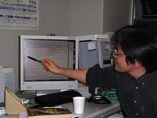

Rubyist Hotlinks 【第 21 回】 原信一郎さん
はじめに
著名な Rubyist にインタビューを行う企画「Rubyist Hotlinks」。 今回は Ruby 関連メーリングリストのアーカイブシステム blade の作者であり、また管理者でもある原信一郎さんにお話を伺いました。お楽しみください。
プロフィール
初期の頃からの Ruby 使いで、数学関係のライブラリを書いている原信一郎さん。代表著作は白い『Ruby プログラミング入門』。
- 好きな言葉
- 迷ったら捨てる
- 尊敬する人
- まつもとゆきひろさん
- ご本人のサイト
- sinara’s home
インタビュー
- 聞き手
- ささだ
- 語り手
- 原さん
- 野次馬
- arton さん
- 日にち
- 2008 年 2 月 2 日 10 PM
- 場 所
- 長岡技術科学大学 (新潟県長岡市)
目次
- はじめに
- プロフィール
- インタビュー
- 終わりに
- Rubyist Hotlinks 連載一覧
プロフィール
ささだ お忙しいところ、どうもありがとうございます。
原 遠いところ1を来ていただいて、大変光栄です。
出身地、家族構成
ささだ 皆さんに聞いているところから、順々に伺いたいと思います。生年月日、出身地、現住所、家族構成など、いずれも差し支えなければ教えていただければ。
原 1960 年生まれで、出身は千葉県成田市。空港の近くです。現住所は新潟県の長岡市。家族構成は、妻と、去年の 5 月に息子が 1 人生まれました。3 人家族です。
ささだ かわいい盛りと。
原 まぁ、一応。だいぶ暴れます (笑)
ささだ お父さんがお風呂入れる係とか、決まってるんですか？
原 僕は入れますね。一応、苦もなく入れておりますけれど。
ささだ 奥さんは、共働きとかされてるんですか？
原 本当は、共働き系なんですけれども。我が家は。新潟には中々、女性の再就職先というのが無い。
ささだ そうなんですか。
原 うん。インテリアコーディネーターの資格とかあるんだけど、使い道が無い。
ささだ なるほど。
好きな言葉、座右の銘
ささだ 好きな言葉、座右の銘。
原 あんまり無いんですけど、言わないのも愛想が無いので。「迷ったら捨てる」というのが。
ささだ (笑)
原 おととい、遠方からの客を迎えるために研究室を血反吐を吐くような掃除をしたので。一応それがポリシー。あんまり勢いの良いのは、座右の銘としては好きじゃないんですけど、一応良いんじゃないですかね。
ささだ どんどん捨てたと。
原 迷ったら何々シリーズっていうのが色々あって。迷ったらどうしろっていう。
尊敬する人
ささだ 尊敬する人。
原 まつもとさんです。
ささだ おお。るびまらしい。
原 ここで迷ったり、居ませんっていう人が信じられませんね。
ささだ (笑)。そういう人、何人か居なかったっけ。そこはまつともさんと言う所だろと。
原 いやいや、僕がそう思ってるから言ってるんであって。
ささだ なるほど。どんなところが尊敬できるというのはありますか。
原 なんとなく、顔がニヤニヤしているところ。
all (笑)
ささだ ま、温厚な方ですよね。
原 うん。
ささだ 温厚な感じで、ズバズバいう人みたいな。
原 あれで人に説教してるわけでしょ。それがどうもね、面白いですね。
ささだ 聞いてみたいですね、一度。
原 そうですね。
ささだ まつもとさんは、週末は毎週スーツらしいですよ。
原 あ、そう。
ささだ 平日は絶対スーツ着ないけど。
原 あの不精ヒゲでそんなことしてたんですかね。大胆ですね。不精ヒゲじゃなかったんだ。
ささだ (笑) 。最近は沸かせてますが。PHP がどうとかで。
原 ああ、らしいですね。
arton 高橋さんが書いてたよね。温厚な人に見えるけど、あれで言語のことになると、ハンドアックス投げまくって、とんでもないやつなんだと。
原 (笑)
ささだ モヒカンってやつね。
原 でも、まつもとさんは、ああいう風に書くと、どういうことが起こってというのを全部読みきった上でやってるんでしょ？
arton そうかなぁ?
原 でも、まつもとさんぐらいになると、いろんな蓄積もあるし、大体方向性ってのはわかってるんじゃないですか。
ささだ どこまで考えているのか。深いところまで考えているような、考えていないようなという。
原 それがやっぱり、まつもとさんらしいんだよね。
ささだ ズバズバやっていくリーダーって感じではないんですよね。
原 うん。やっぱり、Ruby がこれだけ普及したのは、まつもとさん本人のキャラクターっていうのが関係あるんじゃないですかね。
ささだ 非常にるびまっぽいインタビューですね、これは。
原 良い感じ？
ささだ 良い感じ。
原 (笑)
ささだ 最近は、あんまりるびまっぽい話をせずに、淡々と世間話をするというのが。
原 あー、それがるびまっぽい。
ささだ どうなんでしょうね。まあいいや (笑)
代表作
ささだ 代表作。
原 代表作か……。Ruby のスクリプトはたくさん書いてるんですけど、他人が触れるようになってるのは……。
ささだ blade 2 とか。
原 ああ、blade ね。blade は Ruby で出来てますからね。
arton あとは Rational3。
ささだ あれ石塚さんでしたっけ、オリジナルは。
原 Ruby スクリプト版は石塚さん。statistics24とか。一番手がかかってるのは Algebra5 ですね。
ささだ あるじぇぶら？
原 「代数」っていう意味で、物凄い大風呂敷なんだけど。
ささだ Ruby に入ってましたっけ？あ、添付ライブラリではなくて、配っている？
原 そうそう。RAA に登録されている。
ささだ 何をするものなんですか。
原 これは、中学、高校生、大学 1, 2 年生ぐらいの宿題が出来るようにするのがコンセプトになってる。
ささだ 連立方程式とか？
原 うん。例えば、三角形の重心が存在することを証明しなさい、みたいなことが出来るんですよ。
ささだ Ruby スクリプトで？
原 うん。
ささだ 定理証明系みたいな話になるんですか？
原 いや、そうでもないんだけど、一部の初等的な証明は、代数的にごちゃごちゃってやるとできる。
ささだ へー。それって使われてるんですか？
原 使われてません (力強く)
ささだ (笑)
原 たぶん。
arton 是非とも使い方をこの場で。
ささだ この場でというか、普通に記事書いてくださいよ。るびまに。
原 後ね、例えば、x^2 + 5x + 6 を因数分解しろみたいなのあるでしょ。そういうのをやる。
ささだ そういうのがさくっと出来ると。すばらしい。中高生の宿題が一瞬で。
原 そうそう。だから中高生ぐらいの実力は出来なきゃまずいんじゃないかと、僕があるとき思い込んだんですよ。そんなことも出来ないのかって言われちゃったら、困るわけですよ。いや、それ出来ますよって言いたくて作ったんです。
ささだ 使われていない？
原 使われてないですね。僕は使ってますけどね。
ささだ それは自分のご研究で。
原 研究って程でもないけれど。ま、簡単な計算には。僕は、計算がすごく苦手なタイプな人間なんで、それは当然機械に補助させる。させたいんだけど、普通は数値計算ぐらいしか出来ないだけど、そういう数式の処理が出来るようなライブラリで、そのさっき言ってた6 1 週間たっても答えが返ってこないアプリっていうのは、そのあるパート。幸いなことに答えが返らないから、正しいかどうか分からない。
arton それが YARV になると、あっという間に答えが返ってくるから頼りになると。
原 そうだといいな。後ね、import-module7 っていうのがあって、ブロックの中だけで定義を変える。
ささだ selector namespace みたいなことがやりたかった？
原 そうそう。selector namespace 自体はあまり知らないけれど。例えば、整数 ÷ 整数は、今は整数だけど、ブロックの中だけ、整数 ÷ 整数は有理数になる、みたいなことをさせるんですよ。
ささだ それはもう出来た？
原 それは出来てる。
ささだ スレッドセーフなんですか？
原 スレッドセーフにするのが大変だった。
ささだ スレッドローカルストレージか何か使って？
原 それはどういうものだか分からないんだけども、結構泥臭い。
ささだ スレッド変数ってのがあるじゃないですか。Thread#[]。ああいうのを使いました？
原 そうですね。で、これは石塚さんが scope-in-state というのを作ってて。ruby-list を見れば分かるんだけど……。
ささだ ruby-list でしたっけ？応酬してたやつですよね8。
原 そうそう。どっちが速いか競争をしてた。
ささだ どっちが勝ってた？
原 結局石塚さんの勝ちだったかな。それにソースコードっていうか、中身の発想みたいなのは、石塚さんは素晴らしくて。
ささだ 私は、あの議論を見たときには、Ruby 始めたばっかりで、さっぱり分からなかったですね。
原 一見出来そうもないことが、出来てた。石塚さんが出来ちゃったんで、じゃ、僕もやってみようって全然別の方法で。これでどうだ、ああだ、みたいな。そこ (ホワイトボード) に書いてある円の、これはそれを作ったときので、モジュールは重なってるところがあって。
ささだ 数学じゃなかったんだ、これ。
原 これはね……すごくややこしかったです。

ささだ 代表作は、Algebra と、import-module。
原 ですかね。
ささだ あと、blade か。
著作
ささだ 著作。
原 著作は、白い『 』。
』。
ささだ あれ、売れました？
原 結構売れてるんですよ。今 7 刷ぐらい。
ささだ うおー。
arton すげえ。
ささだ あれが私の最初の Ruby 本だったんですよね。
原 そうですか。申し訳ない。
ささだ さっぱり理解できなくて (笑)
原 あれねぇー。僕も訳が分からなくて (笑)
ささだ いや、私が特殊だったような感じがして。後で黄色い Ruby 本を読んだら、定義が書いてあって、なるほど、そういうことだったのかと納得できました。たぶん、私は対象読者じゃなかったんじゃないかと。C、C++ とかをやった後に Ruby を勉強し始めたので、なんか Ruby らしさに気づく前に、原先生の本はリタイアしちゃったかな。最初、CSV を解析するとかありますよね。あれを読んで、うーんってなっちゃって、続かなかったという感じで。
原 僕、結構やさしく書くことを恐れてて。退屈させちゃうんじゃないかっていうのが、すごい怖いですよね。本当は、そういうのは全部自分で抑圧して、きちんと読む人の気持ちになって書かなくちゃいけないんだけど、そういうことがあまり出来ずに。いや、出来ずにってことはないですよ。編集の人からは強く言われたし、すごくたくさんいろんなレビューも一般にしてもらって。あれでもがんばったんだけど、ちょっと暴走したところが (笑)
ささだ なるほど。でもまだまだ売れてると。
原 うん。あと、最後の方で正規表現の解析ルーチンをブロックを使って書くとかいうのがあって。
ささだ 解析ルーチン？
原 正規表現のコンパイラですよ。Ruby の元々の正規表現のルーチンを使うんじゃなくて。さっき言ったアルゴリズムの本を Ruby で書いたらどうなるか、みたいな話ですよね。正規表現のアルゴリズムを Ruby で書いてるんですよ。あれが一番暴走したところです。
ささだ (笑)
原 自分で見ても良く分かる。非常に短くて簡潔なんだけど、「これで動くの？」みたいな。
ささだ 田中さんは、それで授業をやってましたよ。原先生の本からじゃなくて、彼自身が正規表現エンジンを Ruby で作って、学生に 12 回ぐらいの授業で教えるという。
原 あ、そうなのー。田中さん無茶苦茶やりそうだけど、やっぱりやってるんだねー。それから、パーサーみたいなのがあって、コンパイラみたいなのがあって、作ってみると。
ささだ 正規表現コンパイラ？ 正規表現エンジン？
原 うん。
ささだ 実行までするんですか、これは？
原 実行までします。
ささだ コンパイラ、かつエンジン？
原 うん。コンパイラっていうか、インタプリタです。
ささだ ちなみに、また新しいのとかは無いんですか？
原 第二版を作ってます。
ささだ ほう。
原 あと、『TRY! PC』っていう雑誌があって、そこに「超分かりやすい Ruby 入門」ってのを書いた。多分、商業誌で最初の Ruby 解説ではないかと。
ささだ 何かそう言ってた人が居たような気がする (笑)
原 そういうのを言ってる人が何人か居るの？
ささだ いや、eban さんに聞いたのかもしれない。もしかしたら。9
原 なるほど。立派な功績でしょ？
ささだ そうですね。世に知らしめたと。
原 そうそう。一応その時、Perl 入門も書いてて。eban さんと共著。
ささだ (笑)
原 そこで、Perl5 になって、Perl のオブジェクト機能が初めて実装されて訳分からないんで、僕も使ってなかったんだけども。雑誌で解説記事を書いてくれって言われて、初めて良く考えてみて、あ、そういうことかっていうのを書いたんです。多分、Perl5 の OOP の話を解説して、非常に良く出来てた。
ささだ なるほど。
原 今、この場に無いので、何とでも言えるんだけど (笑) 。Perl で OOP っぽい何か書いたことはあります？
ささだ Perl でプログラミングはほとんどしたことが無いです。
原 ここら辺、すごいですよ。取ってつけたような。取ってつけたんだけど (笑)
ささだ (笑)
原 良くそれを成立させたと思って。それは偉いんけどね。
ささだ よくこれでリリースしたと。
原 いや、破綻無くちゃんとできてるから、それはすごい。だって、後から付け加えるってね。無茶だよね。
ささだ 数学の本だと、何かありますか？本業の方だと。
原 本業のほうは、開店休業みたいなもんで。ろくに論文も書いてないし。日々楽しんではいるんだけども、結果は出てません。
ささだ Web で検索したら、1991 年と 1997 年と 1992 年の論文が10。
原 たぶんそれが成果だと思う (笑)
ささだ じゃ、著作はこれということで。名前を読んでもさっぱり意味が分からなかったんですけどね。
原 僕の専門は、代数的位相幾何学っていうやつで。数学の分野には、代数と解析と幾何学と、大きく分かれてて。位相ってのは解析。代数的な、解析的な、幾何学。微分位相幾何学みたいなのもあるし、代数幾何学というのもあるし、全部違う分野。いわゆるトポロジーなんですよね。トポロジーってのは聞いたことあります？位相幾何学のこと。例えば「不動点定理」というのがあって……
ささだ まぁ、本業の話は後でゆっくりとうかがう感じで。
好きなメソッド、嫌いなメソッド
ささだ 好きなメソッド、嫌いなメソッド。
原 あー。map が好きです。
ささだ おお。
原 map が嫌いな人が多いんだけど、良くわかんないんですよ。人差し指と小指だけで打つところがおしゃれだし。なんで嫌いなんですか？
ささだ おかしいですよね。
arton 嫌いな人は居ないんじゃないの？ただ、collect って名前の方が、先に出てくるから。
原 そうですよね。昔は map は無くて collect しかなかったですよね。
原 嫌いなメソッドは、パラメータの順番が分からないから inject かな。でもさっき、ささださんに決定的な記憶術を教わったんで、もう嫌いじゃないかも。それはちょっと書いておいてください。
ささだ (笑)。はい。「each_with_index と順番が逆！」と。
原 逆と。多分それ、物凄く Ruby 界で喜ばれると思う。もしかすると、VM より喜ばれる。
ささだ 厳しいなそれは (笑) 4 年間の成果よりも (笑)
原 僕、これで二度と忘れない。
Ruby に関して
Rubyist になったきっかけ
ささだ Rubyist になったのいつからで、きっかけはなんでしょう？
原 えっと、話せば長いんですけど。昔、日経 MIX ってのがあって。
ささだ パソコン通信。
原 うん。arton さんは PC-VAN とか、NIFTY とか。

arton 全然。まぁ、NIFTY にちょっとっていうぐらい。
原 あ、そうですか。日経 MIX は結構熱い所だったんですよね。例えば、私の青春は日経 MIX でしたっていう人がいるんですよ。そういう所だったですね。そこで、awk 会議ってのがあって……。
ささだ オーク会議？
原 フォーラムのことを会議って言うんですよ。awk 会議ってのがあって、awk と言いながら結局スクリプト言語全般をみてるような感じだった。で、そこの議長ってのをやってたんです。議長ってのは、モデレータで。
ささだ NIFTY 用語で、SYSOP ってやつですね。
原 そうそう。で、初代は、takun、足立さんっていって、ストラウストラップを訳した方で。彼が、『プログラミング言語 AWK』っていう本を訳して、それがベストセラーになったのかな。本として非常にいい本で。実務的なところから、コンピュータサイエンス的なところまで良く書いてあって。誰が書いたんだったかな……。エイホ、ワインバーガー、カーニハンだ、頭文字取ったんだから。すでに酔ってる11。その人が議長を辞めて、僕に代わった。
ささだ それはいつ頃だったんですか？
原 日経 MIX に入ったのは 1990 年だけど 1994 年ぐらいかな。awk 会議のサブカテゴリに、awk/main とか、awk/salon とか、awk/abc とか。abc ってのは、初心者向けのこと。そのにひとつに awk/perl ってのがあったんですよ。awk/perl ってのは、awk 会議の Perl の分科会。皆で、つい Perl 使っちゃうけどしんどいね、みたいなことを。俺がこんなことを言っていいのかな (笑)。つらいね、みたいなことを言ってたら、AWK みたいな Perl があると良いねっていう気持ちだったんですよね。つまり、すっきりした Perl が欲しいねって言った所に、何かで聞きつけて、Ruby っていうのがあるよって。
ささだ それは、リリースされた後？
原 リリースされた後ですね。
ささだ 1995 年、1996 年？
原 1996 年ぐらいですかね。
ささだ 日経 MIX に Ruby がやってきた。
原 やってきた。でも、Ruby のソースコードをアップロードし、awk 会議 ruby 分科会ってのが始まったわけですね。何を隠そう、そこの副議長に、まつもとさんを召喚してですね。僕が議長、まつもと副議長、そういう体制で。
ささだ おお。
原 これは、日本における Ruby 史の画期的な 1 ページってやつなんでしょうか (笑)
ささだ 知りませんでした (笑) 日経 MIX では、Ruby 話は盛り上がったんですか？
原 盛り上がりましたよ。ただ、その頃から BBS タイプというのが廃れてきて、日経 MIX が潰れたんですよね。だから尻切れトンボになったけども。ruby-list を検索すると出てくるけど、awk 会議オフラインミーティングにまつもと氏を呼ぼうってのがあって、東京でみんなで会ったことがある。その時、石塚さんも居た。
ささだ その頃は、もう長岡にいらっしゃってた？
原 僕が議長してたときは長岡に居たかな。
ささだ 東京に原先生も行って。
原 そうそう。
ささだ なるほど。議長と副議長の関係だったと。
原 そうなんですよ。
arton eban さんはその頃会ってた？
原 eban さんはその頃です。eban さんは日経 MIX に入ってましたから。eban さんが ruby を MS-DOS(DJGPP) と Windows で動くようにしたことは、Ruby の普及に大きな影響を与えたんです。当時 PC-UNIX はあまり普及していなかった。
ささだ へぇー。なるほど。じゃ、fj だけじゃなかったんですね。
原 うん。まぁ、fj 経由だったと思う。
ささだ まつもとさんは松江から……。あ、その頃は松江じゃないのか。
原 うん。名古屋。
ささだ 名古屋から日経 MIX につないで。
原 そうそう。本当言うと、副議長って言うのは、副議長職にすると、接続料金を払わなくて良かったんですよ。それで、そうしたんですけどね。まつもとさんに来て欲しくて。
ささだ なるほど (笑) で、言語の仕様とかの議論を熱く語って。
原 いや、そんなことは……。その頃はすでに固まっててたので突っ込んだ話はしてないですね。まぁ、AWK が好きで、Perl に付いていけない人たちが、嬉しかったんじゃないですかね。
ささだ なるほど。
- 原 その頃の……これが 『‘MS-DOS テキストデータ料理学’』。半分ぐらいは僕が書いてるんですけど。これは隠れた……あの、何だ。

ささだ 名著。
原 名著！ よく言ってくれました。
arton 翔泳社版の 256 倍みたいな感じだね。
原 そうそう。
ささだ これ、ペンネーム使ってるんですか？
原 いや、これはそのまんま僕が。
ささだ 原先生の名前が……。
原 後ろの方にあるね。
ささだ なるほど。
原 これは、テキストデータ中心主義っていうか、UNIX 的な考え方を MS-DOS に持ってこようという本です。
ささだ 持っている人は中々居なさそうな。
arton そうだね。確かに便利そうな本だね。
ささだ 貴重な本ですね。
Ruby の好きなところと嫌いなところ
ささだ Ruby の好きなところと嫌いな所。さっき、AWK みたいな Perl っていう話がありましたけど。
原 もちろん、全然違いますよね。異様に偏った見方で。Ruby はやっぱり Ruby。Ruby はオブジェクト指向プログラミングが手軽に出来るっていうところが好きですね。まるで本の最初のページみたいな (笑) 嫌いなところは無いですね。
ささだ おお。Ruby だけがあれば良いと。
原 うーん、そんなことも無いんだけど。
arton いや、1 週間行って帰ってこなかったというのは、あんまり好きになれない気がする (笑)
原 うーん、それは Ruby でそういうプログラムを書くほうが間違ってますからね。
ささだ Ruby の嫌いなところは特になし？
原 うん。僕は身体の延長として、Ruby を考えてますね。好きも嫌いもありません。
ささだ なるほど。Ruby 脳っていうんですかね。
原 脳ではないんですよね。運動系でもあるし。
arton Ruby 強化された肉体。
ささだ (笑)
Ruby を使ってうまくいった事例
ささだ Ruby を使って成功だった、上手く行った事例。blade ?
原 全然、Ruby である必要性はないですよね。blade は。
arton いや、コンテンツが Ruby だよ (笑)
原 blade を Ruby で書いたのは、単に Ruby じゃなかったら失礼かなっていうかね、道理が悪いんで。体裁のために Ruby で書きましたけど、Ruby である必要は全然無い。
ささだ 無理したんだ (笑)
原 あ、ただね。非常に長い間ね、少しずつ作ってるわけですよね。ガウディの教会12みたいにね。それで破綻が来ないで一応続いてるってのは Ruby の偉さじゃないですかね。良いこと言うな俺も。
ささだ なるほど (笑)
原 他の言語だとたぶん、ボキっと折れたり、グズグズグズって潰れたり、破綻してしまったんじゃないかな。一応コードを柔らかく持って、立ち続けてるのは素晴らしいなと。
ささだ 数学とかで Ruby を使ったら上手くいったみたいな。
原 細かい計算は、自分で書いた Algebra を使ってることはあるんだけど。Ruby スクリプトで数式処理を書くってのは、まったく頓珍漢な話なんだけど。だってもっと速くて優れたのがいっぱいあるからね。Mathematica や Maple はすばらしい。だけど、身体の延長になってるわけですからね。仕事の途中から Mathematica っていうのも何か無粋なわけですよ。
ささだ なるほど。
原 こうやってパッと手を伸ばせば届くところに使えるようにあるって言う。引き出し開けたらそこに電卓が置いてあるみたいな。そういう風に、ちょいちょい使う。
ささだ Mathematica がそういう風な身体の一部になっていれば、幸せだったかもしれない (笑)
原 それを言っちゃあお終い……そうだね、きっと。
all (笑)
ささだ ま、高いですよね。
原 高いし。出力を TeX にしたりレポートにしたり、そこまで全部シームレスにできるでしょ。そういうのはやっぱ、Ruby が得意なわけですよ。
ささだ なるほど。
原 僕は、計算がすごく苦手なんですよ。数学やる人っていうのは 2 パターンあって。数学者の平均は、一般の人より暗算とかはできないんですよね。で、特に極端に出来ないグループってのに属してる。
ささだ グループがあるんですか。出来ないから、やりたいっていう。それは関係なく？
原 それは関係ないんだけど。
ささだ 数学とそういう計算は関係ない？
原 うん。だからある意味ハンディキャップを持ってるわけですよね。で、そのハンディキャップを補助してもらってるのが、Ruby なんです。また良いこと言っちゃった。
ささだ (笑)
原 だから、うんと助けられてる。
ささだ じゃ、電卓は irb で。
原 うん。そうですね。だから、ちょっとした計算にはしょっちゅう使うわけ。別に手でやれば、10 分ぐらいで出来るんだけど。
ささだ 私は最近、計算は Windows の計算機を使ってて。
arton めんどくさくないですか？
ささだ いや、数字を押したら出来るので。
arton ああ、テンキーか。
ささだ だから、irb を起動するよりかは楽で。いや、irb を起動してもいいんだけど。もうちょっと括弧とか使いたいときは、xyzzy のスクラッチを使ってしまうという。なんで Ruby を使わないのかは良く分からないんですけど。
原 何で使わないの？
ささだ irb を使う習慣がないんですよ。
原 僕は、irb 使い出したのはこの 2、3 年なんですけどね。
arton えっ？
原 それまでは何かって言うと、ちゃんとスクリプトを書いて、バッチ処理ですね。
ささだ じゃ、電卓は？
原 電卓はほとんど使わないんですよ。
ささだ あー、なるほど。
原 Ruby スクリプトで計算をする。どんな計算でも。
ささだ 最近 irb って逆な感じがしますけどね。
原 まつもとさんがそんなこと言ってたよね。irb 使わないって。でも、使ってみたら便利だねって。
ささだ irb ブーム？
arton ブームじゃないんだけどさ、普通に使うと便利だよね。
原 ヒストリーとかね。補完とか。
arton むしろ IDE ブームみたいな。
ささだ IDE 。すごい一昔前みたいな感じですよね。では、電卓が成功事例ということで。
キラーアプリ
ささだ 自分にとって、これはキラーアプリケーションとかライブラリ、無いと困るものはありますか？ まぁ、blade はそうですよね、全 Rubyist にとって。
原 アプリケーション……
ささだ この質問の背景は、「Ruby で作られたものってあんまりないよね、だから、お勧めのがあったら教えてください」っていう感じなんです。
原 個人的に作ったもので、非常に良く使うって言うのはある。でも公開されてないからね。言っても分からない。
ささだ 何に使ってるんですか？
原 色々、たくさん。
ささだ 無いと生きていけない？
原 無いと生きていけないって程でもないけどなぁ。
ささだ あ、そうですか。私は、自分で作ってて無いと生きていけないものは結構ありますよ。
原 ふーん。例えば？
ささだ メール捌くやつとか。Procmail とか使えないんですよ、私。
原 なるほどね。
ささだ 文法が分からないから。Ruby なら読める。そんな感じで作ってますよ。
arton 車輪の再発明とは言わせない、みたいなね。
ささだ 再発明しまくりですよ。
原 僕もしまくり。僕は結構、マニュアルを読むのが苦で。マニュアルを読むよりは、自分で書いた方が……遅いんだけど、精神的には良いかな。
ささだ ちなみに、その作ってるツールというのはどんなの？
原 非常に特殊なもの。
ささだ それは研究用？
原 研究用じゃなくて。趣味。……なんの話でしたっけ。
ささだ キラーアプリケーション。
原 アプリケーションは特に無いですかね。Ruby 自体がキラーアプリケーション。
ささだ なるほど。上手いですね (笑)
Ruby の習得
ささだ Ruby の習得は簡単でしたか。
原 僕はね、AWK 出身なんで、メーリングリストの最初の頃に、まつもとさん直々に色々質問をして、開眼した瞬間があるんです。それは、昔僕は、変数とオブジェクトの区別が付いてなかった。結構他の、AWK とか Perl とかは、『変数 = 変数』ってすると、元の変数が参照しているオブジェクトがコピーされる。代入とオブジェクトのコピーの区別が付きづらかったんだよね。ところが、変数とオブジェクトの区別が付いた瞬間に、Ruby は非常に分かりやすくなったわけ。
ささだ それが分かるまでが難しかったと。
原 そうですね。その後は非常にすっと。
ささだ クラスがブロックとか、その辺もすんなりと。
原 そうですね。非常にすんなりといった気がしますね。特に、昔は素人さんが日曜プログラムをすると、Turbo Pascal, Turbo Cとか使う。あるときから、オブジェクト指向な機能が付いた。
arton Delphi?
原 いや、Turbo Pascal 5 で、オブジェクトオリエンテッドになった。全然わかんなかったんですよ。僕は、Ruby を勉強して、オブジェクト指向が分かったんですね。だから、非常に感謝してるんです。これは多分、まつもとさんが Ruby を作った意図の一部でもあったのかなと。いい話ですね。
ささだ 深読みしすぎですから (笑) わかんないですけど。
プログラミング全般
初めてのプログラミング
ささだ 始めてプログラムを書いたのはいつぐらいですか。
原 これは、大学 1 年のときに買った、カシオのプログラマブル計算機。
ささだ ポケコン？
原 うん。ポケコンという言葉はなかった。CASIO FX502P かな。で、ブラックジャックかな、作ったのは。
ささだ それはプログラムを全部自分で考えたんですか。それとも本かなんかで。
原 あ、違う。それは友達が考えたのかな。僕は途中でヘタって止めたんだな。最初はユークリッドの互除法かなんかを作ったのかな。
ささだ 原体験はポケコンだったと。
原 うん。ちょっとだけね。でも、計算機って言うのは、数学やる人は使わないってのが常識だったんですね。
ささだ 大学も数学科？
原 まあ。
ささだ じゃ、周り見てもみんな計算機は持ってない？
原 そうです。
ささだ みんな暗算？
原 暗算って、手計算。計算機に乗るようなことはやらないんですよ。シ ンボルの操作だけではなくて、数学的オブジェクトの操作だから。今でもそうだけどね。計算機ってのは基本的には数学には使えないんですよ。昔の数学教室は、学生用の計算機室ってのはあったんだけど、夕方 5 時に閉まってた。つまり、事務が閉まるときに閉まってた。
arton 使ってないの？
原 みんな、タイプの画面使ってる。
ささだ あ、論文書くために？
原 うん。今は違いますよ。僕も特にめんどくさがりだったから、僕のクラスで計算機演習をみんなやったんだけど、僕だけめんどくさいからって、計算機演習をしなかったんだよね。
ささだ 計算機演習って、Fortran とか？
原 Fortran。パンチカードと Fortran。そのぐらいだったから、コンピュータにあまり興味が無かったんだろうな。
ささだ それがいつの間にか日経 MIX に。
原 うん。それはやっぱり、論文を書くためにエディタを使って。エディタを使うのに、マクロを使って。エディタのマクロを使うくらいなら、AWK を使ったほうがいい。あと、TeX をみんな使うようになって。僕が大学院時代ってのは、クボソフトっていう数学専用ワープロってのがあって、それから TeX への移行期だった。で、みんなコンピュータに触るようになって。今は数学関係の人は、ほとんどコンピュータ使えますよね。昔は数学者はコンピュータ触っちゃいけないと。数学が出来なくなるといわれてたんだけど。
ささだ (笑)
原 ま、若干そういうところはある。
Ruby 以外のプログラミング言語
ささだ Ruby以外のプログラミング言語。
原 色々と、つまんではみるんだけど、日常的に使うまでは習得し切れませんね。Haskell とか面白かったけど、面白がってただけ。スゲーとか言って喜んでただけだし。Java も最初は面白がってたけど、何でこんなにいろんなコード書かされるんだってなったし。C はポインタが分からないっていう噂があるのだけど (笑)
ささだ コンピュータサイエンスの先生方でも、C は分かんないっていう先生は結構居ますよね。
原 へぇ。それはどういう意味で分からないの？
ささだ 知らないとか。数学と同じように、別にプログラム書かなくても計算機の研究は出来るので。プログラム書く分野もあるんですけど、書かない分野もあって。Lisp しかできませんとか。
原 Lisp とか Scheme とか、匂いを嗅いで物凄い面白がるんだけど、習得するまでには至らない。
ささだ なるほど。何が好きってのはありますか？ かじってきた中で。
原 Haskell。
ささだ 数学屋さんの琴線に触れる？
原 いや、ああいう徹底した関数型っていうことの発想自体が面白いなって。モナドも最初は全然わかんなくって。分かんないのがすごく楽しくって。
ささだ もう完璧？
原 いや、もう忘れました。
ささだ (笑)
原 純粋な関数型言語っていうのは、入力も出力も持っちゃいけないんじゃないかっていう気がするんですよね。
ささだ じゃ、cat とか作るなと。
原 そうそう。入力もないし、出力もないから、何の役にも立たない。誰も在ることに気づかない (笑)
ささだ でも、普段使うなら Ruby と。
原 そうですね。
美しいソースコード
ささだ 美しいソースコード。
原 あんまり、他人のソースコードを読まないんで。読んだことがあるのは、Ruby のソースコードの一部ですかね。まつもとさんは随分ときっちり書くんだなっていう。見た目はへらへらしてるのに、コードを前にしては真摯な態度になるんだなと思って、それは感動しました。
ささだ なるほど。
原 美しいというような審美眼はない。
興味を持ってるテーマ
ささだ 今興味を持っているプログラミングに関するテーマ。
原 プログラミングに関するテーマ？
ささだ テーマというか、次何を作りたいかとか。
原 うーん……(しばし考える)。Ruby がこんなに普及する前は、自分が色々なものを作ってやろうという気持ちはあったんですけど。
ささだ それは言語から？
原 いやいや、違います。Ruby でアプリケーションを書きたいと思ったんだけど、今はもうすごく立派な方々がたくさんの部品をお作りになってるので、まったく出る幕が無いなという感じですね。言語を作りたいってのはありますよね。
ささだ ほう。どんな。
原 Ruby で、do … end をブラケットにしたりとかね。
all (笑)
ささだ ブラケットの方がいい？
原 いや、なんとなく、囲まれてる感じが強いじゃない。
ささだ それは疑問を持っちゃいけないんじゃないですか、手足の (笑)
原 しまった、馬脚を現した (笑)
all (笑)
ささだ まだ納得がいかないと (笑)
原 いや、納得がいかないことはないんだけど。
arton 爪が伸びるみたいなもんでさ。時々切ってやる必要があるとか。
原 (笑)
ささだ じゃ、Ruby の根本的なところには特に問題がないというか、異論は無いわけですか？
原 多分ね、色々あるんだけど、それより良い物を作ろうと思っても、多分良い物が出来ないんですよね、きっと。
ささだ なるほど。改善案を出すほどでもないと。
原 うん。良い所を 2、3 個作ったとしても、悪いところが 10 個ぐらい出ちゃうんじゃ無いかなって思う。
ささだ まぁ、良く考えてますもんね。
原 うん。
ささだ じゃあ、今興味を持ってるのは、特に無いのかな。プログラムでどうの、というのではないんですね。満足してる感じ？
原 これ、全然違う話なんですけど。スレッドを使って、デッドロックが起こりますよね。しばしばね。
ささだ はい。
原 あれって、デッドロックを起こさないようにするとか、そういうのを自動化できないの？
ささだ あります、あります。
原 どういう？
ささだ そういう理論体系を作って、起こさないことを保証するなり、起こすようなプログラムを書いたら、エラーを出したりという。
原 そういうことできるの。
ささだ ええ。プログラミング言語の理論系の分野や、言語処理系のある分野では。私の苦手なところですけど。だけど全然、野に降りてこない気がしますね。
原 前ね、Ruby プログラムを食わすと、それがデッドロックを起こすか起こさないかを判定するプログラムみたいなのを……まったく書いてないんですけど、書けたら面白いなと思ったんですけどね。
ささだ Ruby プログラムの駄目なところは、動的な部分が多すぎて、解析できないんですよね。例えば、Thread.new って書いても、それが本当にスレッドを作るかどうか分からないんですよ。
原 いやでもね、デッドロックを起こす可能性があるかどうかは分かるでしょ。
ささだ あー、なるほど。
原 つまり、どんなタイミングで何が起こったとしても、起こさないっていう。
ささだ 再定義が起こらないという仮定を置いて？
原 まぁそうだね。ある程度そういう制約の元で。
ささだ 出来るんですかね。私は詳しくないんで分からないんですけど。
原 昔ね、thread.rb っていうライブラリがあって、そこに Queue とかあって。
ささだ 1.8 にもありますね。
原 それがいつまで経ってもバグが取れなかったのね。結構僕、バグの報告したんですよ。
ささだ あれ書いたの修吾さんですよね。たしか前田修吾さんがメンテナをやって。
原 あ、今そうなの？ 最初はまつもとさんだった。で、あまりにいつまで経っても直らないから、何かこれは自動で出来るんじゃないかと思ったんですけどね。考えてみたんだけど、全然手がかりが無くて分からなかった。
ささだ Ada っていう言語があって、それにはそういう機能があるらしいっていう噂ですが。
原 へぇー、すごいなぁ。やっぱあるんだなぁ。
ささだ ぜひそういう研究も。
原 いやいや、それはやっぱり大変だと思うから。手は出さない。

生い立ち
小学校時代
ささだ 生い立ち。いつも生い立ちが長いんですけど、ぜひ自分語りを。
原 えっと、僕は成田に生まれたんですね。で、小学校の遊びは、投石ごっこ。
ささだ (笑)
原 分かる？arton さんは分かると思うけど。
arton あー、これか。
ささだ 石を投げる？
原 そうそう。三里塚闘争13ってのがあって、学生が全国から集まってきて、機動隊に向かって投石するわけ。機動隊は学生に催涙弾を撃つ。それを真似て、赤組白組に分かれてですね、石を投げ合う (笑)
ささだ 危ない (笑)
原 そういう小学生 (笑)
ささだ すっげー怒られるんじゃないんですか。
原 怒られた。水平に投げてはいけないという不文律はある。弓なりに。
ささだ ま、でもそういうのを見てきた時代ということですね。
原 見てきたって言うか、大学時代にもまだあったからね。
ささだ 自分は投げたりしたんですか？
原 僕はしてないけど、友達には結構居て。よく、援農って言って、三里塚で空港を反対して農業を続けている農民を学生たちが手伝いに行って。
ささだ 学生運動の延長だったってこと？
原 そうそう。時々、援農にいかないかって誘われたりして。僕は、盆暮帰省してるからいいって言って。自分の故郷に帰ると、大学の友達が居たりして。
ささだ まぁ、そんな小学生で、あまり数学とか算数とかには興味は無く？
原 あー、自分は算数が得意だと思い込んでいた時期が、一時期あったんですよね。僕は何桁でも足し算できると、1 年生か 2 年生かで威張ってたら、じゃやってみろとか言って。原君に足し算をしてもらう列が出来てね。
all (笑)
原 みんなのノートに長ーい数字が並んでて。僕は次から次へ足し算をしてって。
ささだ そんな小学 1 年生 (笑)
原 そうそう (笑)
arton 占い師みたいだな。答えが正しくてもさ、持ってった子も分かんないんだよ、きっと。
all (笑)
原 そうだよ。絶対間違ってたんだよ、それは。だって、計算が不得意だったんだよ、たぶんね。ただ、アルゴリズムは知ってた。
ささだ 筆算をどうすればいいかとか。
原 そうそう。
ささだ あ、筆算を習うのは小学 2 年生とかでしたっけ。
arton ちょっと分かんないな。
ささだ ま、そんな算数天才少年だったと。
原 そうそう (笑)
ささだ それが小学 1、2 年生で、3、4 年生は、もう石を投げていたと (笑)
原 いや、そんなことも無いんだけど (笑)。小学校のことは、あんまり覚えてないですね。やっぱり打ち所が悪かったか。
ささだ 数学数学してたんじゃないと。
原 もう全然。
ささだ 計算機とは……その時代は無い？
原 もちろん無い。あっ、初めて CASIO Mini が出た時代で、家にやってきたときはとても嬉しかった。
ささだ CASIO Mini ってなんですか？
原 えっと、12800 円で、こんぐらいの大きさの電卓が、初めて市販されたんです。みんながそろばんじゃなくて電卓を使うようになったんです。爆発的ヒットになったんですよ。
ささだ なるほど。ごっついものじゃなくてハンディな。
原 今でも形を覚えてるぐらいだから、非常にインパクトがあったんですよね。
arton 富士山麓オウム鳴くって広告していた電卓ですか？
原 富士山麓ってのはルート 5 ですか。
arton うん。あのころの電卓の広告で、やたらそれが印象深いから、それかな、と。電卓でルートの計算が出来る。って、それは CASIO Mini じゃない気もしてきたな……。
原 いや、CASIO Mini かもしれない……。ささださんの時代っていうのは、計算機があふれてる？
ささだ もう当たり前でしたね。親父の持ってる電卓とかを触って、面白いとか思ってました。関数電卓だったので、小学校の頃は何が書いてあるかさっぱり分からなかったですけど。何か押したら数字が出てくるから。
原 プログラマブルではなかった？
ささだ ではなかったですね。
原 プログラマブルと言えば、電子ブロックってのがありましたよね。
arton ありましたね。
原 あれは面白かったですね。
ささだ それは小学校？
原 小学校。
ささだ それでラジオ作ったり？
原 そうそう。
ささだ いわゆる理系とか工学系には興味があったと。
原 ええ。
中学校時代
原 小学校 5 年、6 年が物凄く無気力症になって。無駄じゃ無駄じゃ、みたいな感じ。
arton 無駄じゃ無駄じゃって、ヘムリンさんかな。
原 うん。何をやっても無駄じゃ、みたいな。
arton 知らないな。
ささだ 知らない。
原 ジャコウネズミさん？そういう無気力少年だったんですね。中学校も、その延長だったんじゃないですかね。
ささだ 部活とかは。
原 部活も別にしないし。一応、科学部かなんかだったけど。あまりやらないし。運動部なんてとんでもない。
ささだ 無駄じゃんと。
原 無駄です。僕は、中学校の修学旅行のときに、京都に行って山に登って降りた時に、先生に「どうせ降りるのになんで登ったんですか」ってマジで訊いて怒られたことがある。
ささだ (笑)
原 つまり、上に何も無かったんだよね。何かあったらしいんだけど、僕には見えなかった。
ささだ あー。
原 ま、一事が万事そんな感じですよ。
ささだ そんな中学生が高校に。
arton いつ無駄じゃなくなるのか。
原 いや、基本的には今もまだそれが続いているわけですね。
all (笑)
ささだ プログラムとか、無駄じゃないですか？
原 無駄ですね。物凄い無駄ですね。
arton 無駄じゃ無駄じゃ (笑)
ささだ 数学とかはどうなんですか？
原 数学？数学は物凄い無駄の最たるものじゃないですか。
ささだ 自分の職が (笑)
原 だって、僕ね、この大学に来たときに「先生の研究はどんな役に立つんですか」って訊かれて、びっくりしたことがあるんだよね。そんな質問を受けたことが無かったんで。大学でもそんな質問する人は居なくて。で、なんかの役に立てようと思ったこともないし、役に立つと思ったことも無い。
ささだ (笑)。何か面白いからやってる？
原 そうそう。遊んでるっていえば遊んでるんだけど。
ささだ 私もそっちの立場ですけど、工学だと役立つものっていうのはありますよね。
arton そういうのって、言ってるだけかも知れないよね。
原 そうだよ、きっと。
ささだ マッチポンプ？
arton マッチポンプとは違うかなぁ。そう言わないと、エクスキューズが立たないだけでさ。エクスキューズして「こういう役に立つんです。社会のためには私はやってます」って言うんだけど、実際は面白いからやってるだけでさ。
ささだ (笑)
原 うん。そうじゃないの。
ささだ いやまぁ、それはそうですね。お金もらうために、こんなに役立つんですよって言いますよね。
arton 二つしかないんだよ。面白いからやってるか、お金のためにやってるか。多分面白いからやってるんだよ (笑)
ささだ 世界人類のためになりそうだと。
arton 自分がやってて面白くて、なおかつ世界人類のために役に立つんだったら、こんなに良いことは無いって感じじゃない。
ささだ で、高校では無気力症ではなくなってる？
原 いや、ずっと続いてますよ、高校でも。
ささだ (笑)
原 少し戻るけど、僕は中学校のときに何をやってたかというと、ペニープレーンって言って、3 グラム以下のバルサで作ったゴム動力の飛行機を作ってったんです。延々と作ってた。授業中も。だから、一番後ろの席を自分の席だと言い張って。そこで、授業中にピッとバルサを曲げたりとかして、飛行機を作ってました。時々、セメダインの匂いをプーンとさせたり (笑)
all (笑)
ささだ 先生は何も言わないんですか？
原 言わなかったですね。
ささだ もうあきらめてた？
原 うん。多分あきらめてた。あんまり関わらないほうがいいと思ってたんだろうね。おかしな奴と。
ささだ でも、高校とか行くためには、テストで良い点を取らないとっていうのは。
原 僕は付属中だったから、あんまり。
ささだ あ、なるほど。
原 当時、近くの中学校は公立と成田高校付属中学のどちらかで。公立は、丸刈りで、私立の方は、普通に長髪。坊主なんてありえないと。他人の頭になにをするんじゃと。物凄い嫌悪感が坊主にあって。で、付属中に行って、そのまま高校に上がったと。
ささだ なるほど。
原 arton さんは、そういった無気力だった時代とかはあったんですか？
arton 無気力って言うか、そうですね、やっぱり中学校、高校にかけて、特に何かしたいものは無かったから。
原 一種の無気力ですよね。
arton そうですね。
ささだ テレビ番組とか、何やっても無駄みたいな、すれた子みたいなのが。
arton っていうか、テレビってそもそも嫌いなんだよね。だって、待たないと駄目じゃん。何が嫌って、待つのが一番嫌だからさ。だからテレビって見ないんだよね。
ささだ 待つって言うのは、番組が始まるのを待つのが嫌だから？
arton それも待たないと駄目じゃん。はっきり言って、映画は好きなわけ。映画は、まともに作ってるのが分かるから。テレビって言うのは、単に筋を人間に追わしてるだけじゃん。映画の面白さは、映画そのものにあって、物語はなんでも良いみたいな。あくまで表現を見てるわけであってさ。テレビってのはそれが無い。表現は無くてさ、ただ筋を追ってるだけでさ。だから文章で書いてあったら 3 行で読めるものを、延々 15 分掛けてやったりするわけじゃん。あれが嫌なんだよね。
ささだ へぇー。映画はちゃんと、それ以外のものを見ると。
arton そう。映画だからね。もちろん、テレビみたいな映画もあるから、それは見ないけどさ。たまに見ると寝ちゃうんだよ。物語は面白かったかも知れないけど、見てないから分からない。
原 僕は結構テレビは見る。本当だったら、全部のドラマに目を通したいんですよね。
ささだ (笑)
原 微妙に、ちょっとましなドラマが出てきたな、とかね。昔は、トレンディドラマの評論家でしたよ。
arton おお。
高校・大学時代
ささだ それで、中学はずっと飛行機を作っていて、高校は何を作ってるんですか (笑)
原 高校は、なにをしてたんだっけ…。記憶に無いですね、もう。
ささだ (笑)
原 中学校 3 年生ぐらいで、数学が面白くなって、高校はすごく数学は意識してた。
ささだ それは、数学の本を読んだり、数学の証明を自分で解いたり？
原 そうそう。結構、そういう勉強の仕方は良くないんだけど、いっぺん考え始めるとずっと考えるっていう所があって。それは飛行機と一緒で、ひとつの問題を考えると、ぶっ通しで 2 週間ぐらい考えるとかね。その間、全部の授業を無視。
ささだ (笑)
原 ずーっと、同じことを考えてた。そういう勉強の仕方って、良くないんだけどね。休んで、色々と新しい知識を蓄えてやるのが良いやり方なんだけど、考えっぱなしみたいな。
ささだ それはもう、寝るとき以外はずっと考えてると。
原 そうそう。おんなじことをずっと考えてるから、思いっきり煮詰まってるんだよね。それでもそればっかり。
ささだ 飽きないと。高校の数学の授業とかは、全然興味が無かった？ 自分でやってるんだったら。
原 うん、そうですね。
ささだ なるほど。信じられないですね。ちなみに、どんな問題を考えていたか覚えてますか？
原 えっとね、ひとつ覚えてるのは、円形に n 個の玉が並んでいて、同時に 1 個あるいは隣接してる 2 個の玉をとることが出来ると。で、二人で交互にとって最後にとった方が負けだとすると、先手必勝ですか、後手必勝ですかっていうのがあって。
ささだ それは何かの本に書いてあったんですか？
原 これはね、『大学への数学』14っていう受験雑誌の懸賞問題。
ささだ へぇー。
原 それはね、最後に取った方が勝ちだとすると、後手必勝なんだけど。相手が取ったところの対称のところを取ればいい。で、最後に取らせたほうが勝ちだとすると、どうなりますか、みたいなのがあって。それをずーっと考えてた。で、結局答えが分からなくて。解答が出てきたら、n によって、先手必勝だったり後手必勝だったりしますって書いてあって。そのときは愕然としましたね。こっちは、n によってどうなるか決定しようと思ってたのに、n によって色々ですっていう答えだったんだよね。
ささだ あー。n を入れたら答えが出る方程式があるかと思っていた。
原 そうそう。n によって、どっちになるか出すアルゴリズムを探してた。たぶん、未解決問題。
ささだ ふーん。
原 ひどい話ですよね。
arton でも、未解決じゃないですよね、きっと。n の時と、n+1 の時の 2 種類があるんじゃないのかな。
原 いや、そんな単純じゃないです。n によって違うパターンが…。
arton なんだっけ。スーパーマリオブラザーズのミニゲームに花占いがあって。最後に 1 枚取った人が負けになるんだけど、あれが何かそのゲームと近い気がするんだよね。あ、違うか。1 枚か 2 枚じゃなくて、1 枚からたくさんか。そのミニゲーム集の中にあってさ。2 人で戦うわけなんだけど、花があるわけ。お互い取って行くんだよね。最後の 1 枚を引かされたほうが、ウェーって言って負けるんだよ、確か。そういうのがあるんだよ。
ささだ スーパーマリオブラザーズで？
arton DS のだから、スーパーマリオブラザーズじゃなくて、なんだっけ。15
原 だけど、それは何個並んでるかが固定されてるわけでしょ？
arton 固定されてますね。
原 それが、n によってどうなるかって言う……
arton あ、そうかそうか。
原 n から先手必勝かどうなのかって言うのを出す、しらみつぶし以外のアルゴリズムが欲しかった。ひとつ、例えば n が 7 だったら、どちらかに決まってしまうわけ。でも、任意の n の時にどうなのかっていう話ですよね。本当にあの時は無駄でしたねぇ。
ささだ (笑)。じゃ、そういうのは雑誌を読んで仕入れてきては、考えて。
原 そう。
ささだ で、大学も数学科に行こうと。
原 うん。大学はね、理学部ってのがボンとひとつあって、数学科っていうのは無いんですよ。で、主に数学を勉強したりという但し書きが付くわけ。数学科じゃないんですよ。だから単位を生物と数学で半々ずつとって卒業とかも出来る。ルーズなところだったですね。
ささだ で、原先生は数学だけをやった？
原 そうですね。数学と物理と半々ずつで卒業した他人も多い。
ささだ その頃は、授業を受けてたんですか？
原 いや、よく登校拒否になってて。授業に出られなくなっちゃった。正確に言うと違うんだけどね。とにかく、出なかったですね。授業は。僕は、トポロジーを専攻しようと思ったから、トポロジーだけは 1 回だけ出て先生の顔を覚えようとして出たら、トポロジーだけ単位を落とした。
ささだ (笑)。登校拒否で、他の単位は？
原 大丈夫だった。登校拒否だけども、午前中登校拒否で、午後出られる。
ささだ (笑)
原 で、授業って言うのは、午前中。で、演習が午後だから、登校拒否で全部の授業聞かなかった。ただ 1 回だけ、トポロジーの授業を聞いた。
ささだ それでもやっぱり大学院で数学をやるという固い意志はあった？
原 それはあった。それは他に何も出来ないみたいな感じもあるし、働きたくないなっていう考えがあるでしょ、学生だったら誰でも。
計算機とのつきあい
ささだ まぁ、分からなくもないですが (笑)。計算機はいつ頃？
原 論文を書くときに TeX とか使って。
ささだ 論文を書くのは大学院？
原 大学院。そっからですね。
ささだ それは UNIX か何かの環境で？
原 それはもう、MS-DOS で。PC-98。ASCII TeX ってのがあって。
ささだ それは、論文を書くために研究室においてあった？
原 数学教室の計算機室って、5 時で閉まる。VM とか VX とか。
ささだ 論文書くよりも TeX を使ったら面白いじゃないかと。
原 そうそう。あと、Turbo Pascal で遊んだり。
ささだ じゃ、数学家は計算機を触っちゃいかん、という環境だと計算機を使ってる人はあまり居なかった？
原 そんなことは無いですね。FM-7 で整数論の計算をした同級生が居たから。
ささだ やってる人はいたと。
原 うん。
ささだ 日経 MIX に入りだしたのもその頃？
原 それは論文を書くためにエディタを使うと。当時流行ってたのは、Vz エディタ。MS-DOS 上で動くアセンブラで書かれたエディタで、マクロが搭載されていて、色々書くのがめんどくさくなってマクロ組んじゃえってなって。Vz エディタに関する会議、フォーラムみたいなのが日経 MIX にあるんで、そこに入ったっていうのが最初。
ささだ Vz のマクロ使うんだったら、AWK 使えよと。
原 そうそう。
ささだ それは言われたんですか？
原 いや、自分でそう思った。
ささだ (笑)
原 だって、アセンブラに近いんですから。そのマクロが。
ささだ なるほど。でも良く知ってましたね。例えば、日経 MIX があるってことは、何も知らないと結構わからないんじゃないかな。
原 ASCII かなぁ。
arton 雑誌に出てるんだよ。
ささだ あー、そっか。その頃はそういう雑誌があったのか。最近無いですよね。
原 一時期ね、パソコン雑誌は毎月十冊ぐらい買ってたんで。だって、いっぱい出るんだもん。
all (笑)
ささだ なるほど。で、そっちにはまりだして。
arton それは大学院の頃ですか？
原 大学院の頃ですね。パソコン通信を始めたのはその頃で。パソコン通信っていうのは、非常に衝撃的でしたね。分からないことがあって質問すると、寄ってたかって教えてくれる。全国の人がね。その時に、知識っていうのは自分が持っている必要は無くて、他の人が持ってて、情報が交換できれば良いんだと。だから、一種自分の脳の延長だっていう感覚を持って、すごく感動したんですよね。
ささだ 今なら、Web 2.0 とか言ってそうな話ですよね。
原 そう。だから、インターネット、インターネットって言ってるけど、別にインターネットじゃなくて BBS で十分だったんですね。技術のある人がいっぱい集まってる結構濃い集団だったですね。もう要らんちゅーぐらい色んなことを教えてくれるわけですよ。初心者が来るのを、手ぐすね引いて待ってるわけ。
ささだ (笑)
原 今、ruby-list が全然そういう感じ無いでしょ。
ささだ 教えたがりは多いですよ。
原 教えたがりは多いけども、教えてもらいに来ないじゃない。あれは、まつもとさんが悪いんだと思うんだけど。
ささだ あ、そうですか？
原 一時、まつもとさんがあんまりごちゃごちゃ書かないでくれみたいなことをどっかで言わなかったっけ？
arton あー、言ったような気がする。でも、もしそれだけが事実だったら、本当に馬鹿なことを訊く初心者なんて、過去のログを見るはずが無いんだから。やっぱりそれだけじゃ無いんじゃないの。まず、ML っていうのが、もう駄目なんじゃないのかなぁ。初心者は ML に来ないもん。OKWave とかさ、ああ言う所で訊くんじゃないの。宿題が出たんですけど、1+1 はどう書けばいいんですか、とか。
ささだ あと 2 ちゃんねるとか。
arton 2 ちゃんねるもありそうだね。明日の朝までに 1+2 のやり方を知りたいんです、って。
原 BBS でネットワークの面白さって十分伝わって、例えば論争とか起こるわけね。ところが当時 BBS 上で論争が起こるということ自体が一般の人に言っても伝わらなかった。例えば言葉で傷ついたり、激怒したりするということがネット上で起こるということを精神科の先生に話をしたことがあったんだけど笑って相手にされなかった。勝手に思い込んでるだけじゃないのって。つまりアイデンティティの一部がネットの上に載るって言うことが、当時は一般の人には想像できなかった。今はもう当たり前のように、誹謗中傷という言葉が使われるけど、ネットの会話で人格の一部を否定されるということが一般には全く知られてなかった。
arton それはあんまりネットは関係ないな。雑誌とかでもそうだけど、読者の声なんかでも喧嘩になることがあるよね。『噂の真相16』なんか平気でやったり。ああいうのを見てると侮辱されてムキになって否定してくるやつなんて、別に活字でも見られたことであって。
原 たしかにね。昔、有名な作家同士が月刊誌上で口論したりなんか。
arton あ、そういうのもありますね。『噂の真相』は投稿欄で素人同士が口論やって。
原 (笑) それでもまあ、編集者は喜んでるわけですよね。
ささだ ちなみに出身は京大ですよね？京大だと計算機というと京大マイコンクラブとかが有名だと思うんですけど、そういうのには入らなかったんですか？
原 それはもう全然。あの人たちは本当に本格的だから、私なんぞが出る感じではない。
ささだ MIX の会員の議長は本格的じゃないんですか (笑)
原 あ、ちなみに日経MIXの議長の業務というのは毎月の議論のダイジェストをまとめる。それが唯一の義務だったんです。ダイジェストは手作業でまとめるのだけど、足立さんは、それこそ AWK の出番だということで digest.awk というのを作って自動化してしまった。これが議長連に流行った。唯一の業務が自動化されて問題になったりして。実はそれが blade の起源なんです。
ささだ 重要そうなところをピックアップして、1 行にだすみたいな。それを AWK プログラムで作った、と。ちなみに議長やりだしたのは大学院の時？
原 そう。
ささだ じゃ、デビューしてすぐに議長やれっていう？ 暇な学生だろみたいな感じで？(笑)17
原 そうそうそう。その中で僕は論文を書いたの。あの BBS の中に AWK のコードを書くと。で、その掲載形式18っていうのを決めたんですよ。点線で山 (^) がある。ここが始まりで、点線で $ がこうある。その間にコードがある。で、後で Ruby のプログラムを書くと、そこだけ抽出されて出てくるみたいなプログラムを作ろうと決まったので。それを決めた時に、点線はコードの掲載形式の一部なのか、記事の一部なのか、ていうのが論争になった。
ささだ バイクシェルフ問題19みたいな。
原 何ですかそれ？
ささだ バイク小屋の屋根の色を決めるっていう、しょうもないことを論争するって言う。
原 あ、そうなんだ (笑) それよりもっと深い論争だったんですけど。僕は、点線は外だ。内側じゃないということを切々と書いた長い文章を書いて。それを書いて認められたんですよ。素晴らしいと。あんたはこれから議長だと。
all (笑)
ささだ それ、プログラミングがどうとか、そういう話では……。
原 ではないです。点線が外か内かっていう認識だけの話。
ささだ おー。でも人を説き伏せるのは難しいですよね。なるほど。
原 ……こんな話でいいんですかね？ (笑)
ささだ こんな話が良いんです (笑)
arton それがるびまのインタビュー。
ささだ 点線で、いつの間にか Ruby の偉い人に。
原 そうなんです。点線が内側なのか、外側なのか。
arton なぜ外側なんですか？いや、僕もそう思うんだけど。
原 何でだったかな。特別扱いすべきものは、きちんと特別扱いしようみたいな方式です。Ruby でいうと、nil を普通のオブジェクト扱いするのに、僕は反対なんですよ。
all おおー。
原 ハッシュで、値として nil を与えると要素を delete するっていう機能が昔はあったんですけど。それは AWK 譲りかな。
ささだ JavaScript でいう undefined みたいなものですよね。
原 そうそう。nil は特別だから、そういうことが起こっても良いと。nil を代入するんじゃなくて、nil が来たから、全然違う動作になってしまう。そういうことがあるべきだと言うのが、僕の主張です。何か特別なものがあっても良いという。すべては Object だから平等に扱うべし、みたいな考え方は、良くない。なぜ良くないかと言うと、特別なものを内部に取り込んでしまうと、新たにまた別に特別なものがどうしても必要とされてしまうのではないかと。
ささだ 今、無いは無いでやってるけど、それは無理をしているはずだ？
原 そうです。
ささだ ま、delete は delete というメソッドがあるしという。
arton でも特別なものを取り込むと、もっと特別なものが新たに出てくるから、発展するよって話じゃないんですか？
原 いや、発展しないので、結局元に戻ってしまう。
ささだ 発散しちゃうとかそういう。
arton じゃ、特別なものは取り込まないほうが良いと言うわけですか。
原 そうです。特別なものは特別なままにしておく。
arton ああ、そうかそうか。
原 特別扱いすべきものを……。
arton 無理に取り込むって言うのは、意味が無いと。
ささだ nil を変数に代入したら、それは変数の消滅だ、とか？
原 そうそう。そういうことの方が良い。
ささだ それは華麗にスルーされたんでしょ？
原 まぁ何か、知らないうちに。
ささだ うやむやに？
原 時々あるんですよ、Ruby には。僕に断りも無く話が違う方向へ進んでしまうことがね。
ささだ いやそれは誰に断りも無く変えますよね (笑) この間、私とまつもとさんのインタビューをやったら、Ruby の仕様は密室で決まるとか書かれちゃって。
原 (笑)
arton 密室どころの騒ぎじゃないよね。
ささだ まつもとさんの脳内で決まってると言う。往々にして。
原 いや、あれなんかね、みんなで話し合って決めてるように、一見見えるところが罪深いんだよね。
ささだ やっぱりそう見えてるんですかね。Ruby の仕様製作委員会みたいなのがあるような感じが。
原 みんなで色々な意見出し合って、民主的に決めるわけじゃないけど、一番良い意見が採用される、みたいな。
arton そういう意見じゃなくて、まつもとさんが単に、それが良いなと思った仕様になる。
ささだ まつもとさんが良いと思った意見が一番良い、ですよね。ま、それはそれで良いんじゃないかと言う気がしますけどね。
原 ま、良いんですけど。全然問題ないでしょ。
ささだ ま、点線は特別扱いするべきだと。内と外って言う表現が良く分からなかったんですけど。
原 いや、別に単純な意味ですよ。カプセルがあったとすると、カプセルの皮はカプセルに属するのか、外界に属するのかっていう。
ささだ なるほど。で、ユーザーが見たいのは内側なんだから、外側はいらないじゃんとか。
原 うん……。詳しい話は忘れちゃったけど。
arton カプセルはどっちに属するんだろう？外側に属するの？
ささだ 薬だったらカプセルにそういう成分が。
arton でも欲しいのは、成分じゃん。外側の世界とインターフェースするためにあるんだから、外側にあるんじゃないかな。
ささだ ああ、なるほど。
arton 僕が内側と外側を、実は全然勘違いしているような気がするけど、ドキュメントの中に、スクリプトが埋めてあって、区別するために点々がある。その点々は、抽出したスクリプトの側なのか、それともスクリプトを取った後のメッセージのどっちに残るべきかというと、そりゃメッセージに残るだろうな。こういうスクリプトがありましたよって、後で位置もわかるし。
原 そういう意味ですよ。例えば、点線はコードの一部じゃないんだから、当然外だと思うでしょ？
arton 思いますね。
原 当時、awk 会議は、スクリプト側に属するべきだというのが非常に強く……、あ、思い出した。違うわ。点線じゃなかったんですよ。シャープだ。# だったんだ。区切りが。
arton おお。
原 で、# の並び最後に、^ が付くと始まりで、$ が付くと終わり。# の部分はコードの一部になってる。
ささだ valid な AWK スクリプトであると。
原 うん。どっちでもいいから、便利だって言うので、じゃそれにしようって話だからね。その時に僕は駄目だと。エラーになるようなものを境界にするべきだと、説得したのよ。
arton おおー。
ささだ なるほど。
arton それはそうだよね。スクリプトに全部一々そんなくっだらないものが埋め込まれてたら邪魔でしょうがないよね。
原 でも、安全ではあるよね。
ささだ 何かそういうスクリプトが埋め込まれているスクリプトが作れないという制約は付きますよね。ま、でもどうでもいいですよね (笑)
原 どうでもいいね (笑) それを先に言われちゃうと。僕が先に言おうとしてたのに (笑)
arton いやでもさ、便利なスクリプトってのを配る時にさ、こいつにバグがあって、変なコメントが前後に入るって言われるかどうかって、瀬戸際じゃん。
原 ……これ今何の話ですか？
ささだ 生い立ちですよ。大学院で計算機にズブズブとはまって行った様子を。
arton 計算機って言うか、日経 MIX。
原 かなり awk 会議に出てた頃は、1 バイトでも短いコードを書くっていう競争があって。
ささだ 今で言う golf ですね。それでもう AWK マンセーみたいな感じ？
原 そうでもないんだけど。AWK が一番気に入ったのは、『プログラミング言語 AWK』っていう本が良かった。だから、スクリプト言語自体、初めて出会った。スクリプト言語の AWK を初めて見た時に、小さなロボットに見えたんですよね。自動的に動くね。
ささだ オートマトン。
原 うん、そうそう。すごく魅力的だった。
ささだ その前に、C 言語とか Pascal とかを見ていたわけではない？
原 うん。その時は無かったんですよ。何でだったんだろうね。
ささだ ちなみに、その頃数学の問題とかを解いてたんですか？
原 うん。時々。
ささだ メインはパソコン通信？
原 そうですね。
ささだ で、数学で学位を取られたんですよね。
原 うん。
ささだ 数学で学位をとるって、なんかとんでもないことのように思えちゃうんですけど。
原 あの大学は結構、いろんな学生が居て。偉い人も居れば、そうでない人も居るわけ。で、教員のほうも、体裁は適当で良いとか言って。
ささだ えー (笑)
原 あいつ、めんどくさいから、みたいな (笑)
ささだ (笑)
原 皆さん自分の腕一本でやってきた自負があるから、肩書きを軽視する。
ささだ このまま居られても困るしっていう。修士までは聞く話ではありますが、博士でもあるんですか。
原 何も困らないですよね (笑)
ささだ えー (笑)
原 権威が下がるって言ったって。10 人居て、1 人 2 人がんばってもらえればそれでいいわけでしょ。
ささだ ベンチャーみたいな。
原 ろくでもないのが居るかもしれないけど、偉い人が確実に居る。
ささだ で、出てからすぐこちらに？
原 しばらくは京都で非常勤講師をしてた。流しの数学教師で。非常勤講師で結構食えるんですね。
ささだ 流しのプログラマーという人も居ましたが。
原 非常勤講師で、京大と同志社と立命館と、大阪工大と。結構バイトでも良い給料くれるし、休んでも給料くれる。
ささだ えー？
原 夏休みにも給料くれるんですよ。場所によりますけど。それは同志社。だから生活できる。
ささだ 最近だとすごい厳しいと言う話ですが。
原 多分そうでしょうね。それは昔の話で。まぁ、ブラブラしてたんですね。それで、そろそろどっかに出たほうがいいんじゃないのって。
ささだ で、こちらに移られて。数学の先生という形で。
原 いや、教養の先生みたいな感じで。1、2 年、あるいは 3 年ぐらいを教える。大学院でも教えてるかな。数学の論文で卒論書いたり、修論書いたりする学生は居ないんだよね。そういうのを書きたいって言ったら、受けなきゃいけないっていう噂もあるんだけど、僕のところに言ってきた学生さんは居ない。
仕事に関する話題
普段のお仕事
ささだ 普段、仕事って何をしてるんですか。
原 まぁ、授業をしたり。
ささだ 授業。教養の先生として。授業してない時間は。授業の準備？
原 うーん、それも良く分からない。
ささだ 雑用がどんどん振ってくる感じ？
原 雑用、結構あります。
ささだ なるほど。
原 結構、数学で遊んでるかな。
ささだ 研究してると。
原 研究とはいえないんじゃないかな。『博士の愛した数式』20状態なのかね。読んだことあります？
ささだ 私は、映画があるぐらいしか知らない。
原 あれはね、新しい数学をどんどん作っていこうっていう状態じゃなくなっているわけねもう、博士は。楽しんじゃってるわけだよね。新しいもの作るって言うよりは。新しい物を作れば、それはそれで楽しいんだけど。そういう状態。
ささだ 愛でるって言うやつ？
原 そんな感じ。
arton 博士って、忘れやすくなってるから、次々と忘れて、また新しいものだと思って愛でるっていうのは無い？
原 それもちょっとある。
ささだ 原先生は忘れてるわけじゃない？ (笑)
原 僕も忘れてるんですよ (笑)
ささだ (笑)
原 で、話し戻りますけど、Ruby の良い所はね、僕は物凄く忘れっぽいんですよ。だけど、3 日前のコードは他人の書いたコードに見えるって言うかな。
ささだ 言いますよ。
原 僕はそんな感じなんですよ。だから、前のコードに、もう一度復帰できるのは、僕は Ruby は非常にしやすいと思ってるわけ。昔のことは思い出しやすいっていうか。あるいは、狭い範囲だけ思い出せれば十分だみたいな。
arton ああー。
原 モジュール化されているとか。そういうスクリプトになりやすいんじゃないかな、Ruby は。
arton なるほど。
原 僕は、極端に記憶力が悪くて、ヤバイぐらいなんですね。例えば、先週どこまで授業やったか忘れちゃう。
ささだ (笑)
原 ずっとね、粋がって授業のメモは取らないみたいなことをやってたんだけど、それだと先週やったのと同じのをやったりするんですよ。
ささだ 授業でやる内容は覚えてる？
原 うん。授業の内容は覚えてるけど、どこまでやったかは忘れてしまう。で、それは原先生、ちゃんとメモを取らないとだめだよって怒られて。で、メモを取るようになった。それで、同じことの繰り返しは無くなったんですよ。それに気付いたのは、ここ 10 年ぐらいかな。
ささだ (笑)
原 ところがね、ノートでどこまでやったって書いたのは良いんだけど、後で 1 週間後に見返したときにね、それを書いた記憶が無いのね。なんか、そこに書いてある文字の筆跡も、自分のじゃないような気がする。誰だ僕のノートにいたずら書きしたのは！
ささだ (笑)
原 それぐらい酷いんだよね。それぐらい極端に記憶力が無いんだよね。ハンディキャップがある人でも、Ruby は使えると。前の自分に戻してくれるような気がするんですけどね。人に優しいっていうかね、ハンディキャップのある人にも優しい。どうですか、この話。
ささだ 私も忘れっぽいんですが、自分の書いた Ruby スクリプトを忘れると、もう一から読んでる気がしますね。思い出しやすいかどうかはパッとわかんないな。
原 えっと、何の話でしたっけ。
ささだ 普段の仕事。
原 あ、普段の仕事。ま、授業したり……。
ささだ 授業したり、忘れたり、授業したり。
原 うん。あと学生が飛び込んでくるので、相手をしたり。
arton 何しに来るの？
原 数学の話を訊きにくる。分からないことがあるんですけどって言うんで、相手をする。
arton 飛込みが出来るのか。
原 自分の学生っていうのが居ないから、みんな飛び込む。
大学での Ruby
ささだ 今は Ruby にはまって。
原 うん。
ささだ 大学でも Ruby を。
原 意外にも、僕はね、この大学では Ruby とかやるってことは隠してるわけ。
ささだ 隠してる！
原 だから知らない。みんな。知ってる人は知ってるけど。もしそういうことが出来るって分かっちゃうと、「計算機実習 2」を持てとか言われる。
all (笑)
原 だから内緒にしてるわけ。数学の先生は、コンピュータ苦手だからっていう印象をみんな持ってるので、それはそーっとしてるわけ。
ささだ なるほど (笑) こんなに出来る人が居るのに。でも、ばれると情報基盤センターとかそういうのをやれとか言われますよね。情報系の先生は結構やれって言われてるみたいで。
原 そうそう。それって大変ですよね。
arton 何なの、情報基盤センターって。
ささだ 要するに、学生用の計算機。大学のネットワークを管理したりとか。で、そういうに関わっちゃうと、大学のメール管理をして、さもいかに spam を外すかとかそういう研究とは関係ない話で、時間ばっか取られるって言う。良く聞く話ですよね。
arton なるほど。
ささだ そういう雑務は特に無いと。それは素晴らしい。
原 最近、e ラーニングやれとか言ってたね。
ささだ e ラーニングは、何かの方針があって、その一環で？
原 そうそう。で、Rails で e ラーニングっぽいものを作ったりとか。
ささだ え、それを作れって言われたんですか？
原 いやいや、何かやれっていうから、じゃあって。
ささだ バレちゃうじゃないですか。自分が作ったって言ったら。
原 そうね。だから僕が作ったんじゃないってことにする。
ささだ (笑)
blede について
ささだ blade の話は聞きたい人が多いと思うので、ちょっと聞きたいんですけど。blade 作り出したのは、AWK の移植だっていう話でしたよね。ここが特徴だとかありますか。
原 非常に泥臭く作ってるだけなんで。例えば、最初に引用部分があると、それを飛ばして最初の言葉が出てきて、それを拾ってタイトルみたいにするわけですよね。
| ささだ 例えばまつもとさんの引用って、なんか変じゃないですか。バーティカルバー ( | ) つかって引用してたりとか。それはもう、そういうルールをつけてとか。 |
原 うん。で、実際に出来上がったものを見て、これはまずいなと思ったらどんどん正規表現を書き換えて。正規表現が蓄積になっているという。
ささだ やっぱ、blade の一番難しいところは、まとめを 1 行取ってくるところになるんですかね。
原 僕の発明は、好き嫌いあるんですけど、インデントの圧縮。
ささだ (笑)
原 これ、分かりますかね。これ普通どうやるかというと、こっから斜めにダダダダダっとなるじゃないですか。これがならないんです。
arton なるほど。
ささだ あー、Thunderbird で見てると、例えば最近の M17N の議論とか、大変なことになってますね。全然タイトルが見えないという状態になっているという。
原 そう。
ささだ それは、ある一定を超えるとツリーにしないっていうことですか。
原 違います。ツリー構造の情報は全部現れつつ……。
ささだ 表示はしない？
原 いや、これを見れば、ツリー構造は分かるんです。
ささだ え？
原 これは、これへのコメントなんですよ。33516 は、33515 へのリプライなのね21。それから、33517 は、やっぱりこれへのリプライ。で、これはこれへのリプライ。これはこれへのリプライ。分かります？ 
ささだ あー。読めば分かると。
原 これは僕の発明。特許取れる。
arton ネストしないで、そのままつける。
ささだ 情報量を落とさずに減らせると。
原 そう。圧縮してるわけ。気付いて頂いて無かったんですか？
arton その見方はしたことが無かった。
ささだ なるほど。
arton もっと、ここのボタンを押すとこんな便利なことがあるっていうのを、ガンガン強くアピールするべきだよね。サムネイル表示したりしてさ。
ささだ サムネイル表示？
arton ここにマウス持ってくじゃん。すると、[thread] とか一言でてくるじゃん。あれ何だかよくわかんないじゃん。そうじゃなくて、こういう表示になるっていうサムネイルが出てくるようになってる。
原 ああ、なるほど。
arton で、w3m つかってるひとは、そんな変なのを見なくて済むから、文句たれないし、IE とか使ってる人は、見て「あーこうなるのか。便利だな」って黙って使ってくれるから嬉しい。八方丸く収まっていいんじゃないかな。
ささだ じゃ、これは是非。
原 あと、意外な工夫があるんですけど。これをね、スクロールさせるとね、動くの。
ささだ それは気が付いてました。上のナビゲーションバーが付いてくると……。うっとおしいとか思った (笑)
原 これ、ちょっとずれるんだよね、一瞬ね。これが、何ていうの？ かわいい？
ささだ (笑)
原 いかにもループさせてます、みたいな。ループを早くすると、分からなくなるわけ。それをちょっと長めにとってあるわけですよ。
ささだ これワザとなんですか (笑)
原 ワザとなんですよ。だから、これを速くしたら、ここに止まって見えるわけですよ。それじゃ、それはねぇ、そういう読者を甘やかすようなことは良くない (笑)
all (笑)
原 一生懸命、コンピュータはループしてる。そこにリソース使ってるんですよ。そこに僕の気持ちが入ってるわけ。
ささだ 健気に追っかけていく感じが (笑)
原 そうそう。そういうこと。それがかわいいっていう意味なんです。
ささだ すげー (笑)
arton そういう意味で、Ruby は遅えーっていう人が居る (笑)
ささだ 深いですね、これは (笑)
原 言う機会があってうれしい。
ささだ ちなみに、以前までは 1.1 で動いているという噂を聞いてたんですけど。
原 長い間、1.1 でしたね。
ささだ おー。
原 部分的に 1.1 だった。
ささだ じゃ、部分的ってことは、いくつかのシステムを統合したものなんですか？
原 うん。Ruby が 3 つぐらい入ってて。部分的に、それぞれ違う Ruby で動いてたんです。
ささだ え、何でですかそれは。
原 え、何でって言うか、めんどくさかったわけですよ。昔の奴をね、動くかどうかチェックするのとか。動いているところは、そのままで。新しい機能を作ったら、それは最新の Ruby で作る。
ささだ ちなみに、どれくらいのコンポーネントでやってるんですか。
原 結構大したことないよね。
ささだ えっと、メールをパーズする部分と、メールを表示する部分と、解析する部分とかですか？
原 そうですね。で、更新が、ツリーの作り直しが、1 時間に 1 回かな。
ささだ あー。
原 リアルタイムじゃない。
ささだ それは、cron か何かで。
原 そうそう。
ささだ そうだったんだ。これは静的 HTML ？
原 えーっと、ここは静的。こっちは動的。
ささだ バックエンドのデータベースは、何を使ってるんですか？
原 えっと、プレーンテキスト。
ささだ おー。
原 違う違う。ごめん。元々組み込みの DBM です。
ささだ おー。それを未だに。
原 未だに。
ささだ 検索ってありますよね。あれは何で？
原 検索は Namazu 。
ささだ じゃ、Namazu にメールを食わせてるところもあると。
原 そうです。で、これを www.ruby-lang.org に収容するって話がまつもとさんから来たんで、是非僕もそうしたいって言ったんだけども、めんどくさくて。コンポーネントが分散していて。
ささだ そっか。だからリリースできないっていう。
原 そうなんです。
ささだ 使い方を書くのもめんどくさいし。ていうか、今出来ますか？ 自分で。
原 出来ますよ。だって、何度かコンピュータ飛んでますから。
ささだ なるほど。データは飛ばなかった？
原 データは飛んでます。全部作り直ししてる。
ささだ 元データはあったんですね。
原 元データはメールだけですから。
ささだ メールのデータは飛ばなかった？
原 飛ばなかった。だから、困るのは時々「僕のメールを削除してくれ」というのが来て、削除するんだけど。
ささだ するんですか。
原 うん、します。何も考えずにすぐ削除。
ささだ めんどくさいから。
原 うん。だけど、それはシステムがリプレースされると、復活したりする (笑)
ささだ まぁ、永久に削除するとは言ってないですしね。ちなみに、これを追加してくれって言ったら追加してくれるんですか？
原 例えばどういう？
ささだ なんだろう。Ruby 関係だと……、Ruby の会のメーリングリストとか。
原 あ、もちろん全然 OK ですよ。
ささだ いま、w3ml っていう Ruby のアーカイバでやってたりするんですけど、blade でやってくれるんであれば。
原 過去メールの束があれば、それをもらえれば。
ささだ おお、素晴らしい。っていうか、haskell-jp とかやってましたよね。
原 うん。
ささだ なるほど。blade で他に聞くことはありましたっけ？
arton 新潟県中越地震22で止まった話が聞きたい。
原 命をかけてね、復旧させた。
ささだ 新潟の地震があって、それで blade が止まった時に、余震が続く中、命をかけて。
原 みんな、建物に近づかないとか言ってたときに。
ささだ blade が止まっちゃまずいという。
原 そう。死んでもラッパを離しませんでした、って。
ささだ 外のネットワークは大丈夫だったんですか？
原 ネットワークは大丈夫だったんですけど、電気が来てなかった (笑)
ささだ じゃあ、命がけでスイッチを入れても、電気が入らない。
原 そうそう。最初はね。
ささだ なるほど。
Rational
ささだ Rational とかその辺の Ruby の数学関係なんですが、これはほとんど、石塚さんと原先生でまとめている？
原 ほとんどっていうか、基本的には石塚さんが全部やっている。
ささだ で、原先生の方でベリファイというか。これは良い、これは悪いと。
原 そんなにもやってない。石塚さんは優秀なんで、僕がどうのこうのってこともない。僕は僕で、適当にやってる。
ささだ ruby-math は、全然流れてなくて。
原 あれは単に、みんなでサロン的に。
arton ruby-math って動いてるの？見たこと無いからわかんないんだけどさ。

ささだ 最近、ずっと無いですよね。ちょっと前は結構あったんですけど。
原 結局、僕は「読み書き Ruby」って思ってるんですよね。そろばんの代わりに Ruby 使えるだろと。中学生ぐらいの数学の勉強に Ruby が使えるようになって欲しいと、ささやかにそう思ってるだけなんですよね。だから、Rational が組み込みじゃないというのは、よろしくないんで。
ささだ 組み込みと言うか、まず C 言語化があって。で、リテラルで書けるとかそういう。
原 うん。本当はリテラルでかけると一番いいんだけど。リテラル書く方法が見つからないんで。小学生が良く使うでしょ、分数って。お父さんお母さんが、子どもに、こういう風にすれば計算できますよって教えるのに、Ruby が使えないって言うことがね。これはとても悲しい。だから、そういう基本的なところを。なぜかあまり有理数ってみんな使わないみたいなんだけど、確かに学校教育以外で中々使わないみたいなんだけど、使うようになって欲しい。
ささだ なんか、ふなばさんが今日のメールで、mathn を基本で有効にした nuby というのを作ったって、ruby-dev にメールがありましたけど。
原 えっ、mathn をどうするって？
ささだ デフォルトで有効にして。// がいわゆる整数のdivだっていうバージョンを作って。何これって。
原 へぇー。えらいこっちゃ、それは。それ、大論争があったのを知ってます？ / を整数の除算じゃなくて、有理数を出しましょうっていう。
ささだ 出されると、非常に大問題が起こりそうな気がしますよね。
arton そこで nuby ？
ささだ よくわかんないけど……。それそれ。その上のほうですね。
原 おおー。へぇー。うわー。
ささだ (笑)
原 これは、これは。
arton フォークとも言わない。nuby って名前が違うんだから。
ささだ Ruby の文法が使えるっぽい何か。
arton mathn を有効にしたディストリビューションってことだよね。
ささだ あと、パーサも変えてると思いますよ。Complex 組み込みとか。
arton あ、なるほど。
原 ふーん。へぇー。僕のインタビューがあると知って、僕の注意が薄れてるところを狙って……。
ささだ (笑) じゃ、とりあえずこれを使えと。ちなみに、浮動小数点数って良く使いますか？
原 まったく使わないです。
ささだ (笑)
原 浮動小数点数っていうのは、数じゃないと思ってるんですよね、内心。
ささだ じゃ、いわゆる計算機分野の数値計算というのは邪道だ、みたいな。
原 時々、浮動小数点数を real って呼ぶ言語とかあるでしょ。実数って。ありえないですよ。
ささだ 全然 real じゃないじゃんと。
原 real っていうのはもっと抽象的なもので、無限桁あるもんなんですよね。だから、そういう float みたいなものを real と呼ぶなんていうセンスには、抵抗がある。
ささだ その話聞きたいですね。
原 ……以上。
ささだ (笑) 例えば Fortran なんかでも、float は浮動小数点数ですよね。そういうのもありえない？
原 だって、有限で止まるわけでしょ？実数は無限に伸びてる。それが実数なんで。これは一番大切なところで、過去何世紀もかかって、人類が苦労してやっと捕まえた。リアルこそイマジナリーな最たるもので23。それを一切無視するんで、ありえないと。
ささだ なるほど。じゃ、Complex クラスの Real パートも real とは言えない？
原 うん。言えないですね。……それは意味が違うか。
ささだ じゃ、Math.sin とかは、何を返すべき？
原 いや、だから Float でいい。
ささだ え、あれ？
原 いや、だから Float を real と呼ぶなって言う。
ささだ あー、なるほど。
原 学生の数学の答案で、答えが 1/2 になって、こうなったら 100 点だけど、この先に、= 0.5 と書くと 0 点にしたいぐらい。
ささだ x = 1/2 だったら、100 点で、x = 0.5 って書いたら 0 点と。
原 みたいな感じ。本当はしないよ。
ささだ その心が分からない。
原 それは、1/2 っていうのは実数だけど、0.5 っていうのは測定値みたいな。
ささだ 有効桁数があるように見える？
原 そうそう。で、例えば、1/2 + 0.5 っていうのを、1.0 って書くと良いんだけど、1/2 + 0.5 = 1 と書くと、これはバツという感じなわけですよ。
arton それがバツという感じは分かるな。
原 ここはもやもやしてるんですよ。汚れてるわけね。この汚れが伝播するわけ。ここが知らないうちにサニタイズされている感じ。float っていうのは実験データみたいなのは使ってもいいんであって、1/2 っていうのは、理論的なものって言う。
ささだ sin 何とかっていうのも、リアルナンバーに入れるんだったら、sin 何とかのままでずっと引きずると。
原 そうそう。そういうことです。
ささだ で、まぁ実際には、Float は使わないと。
原 使うけどね。ま、あまり使わない。だって、小学校の時にそういう風に習うんじゃないの。
ささだ 32 bit で表現できる幅とか習わないですよね。じゃ、BigDecimal とか使います？
原 ほとんど使わないです。
ささだ 小数点が入る数とかはあまり使わない？
原 うん。
ささだ まぁ、割り勘で使うか、みたいな感じで。
原 Rails では BigDecimal は使ってる。
ささだ へぇ。何に？
原 小数は。
ささだ お金の計算をしなきゃいけないから？
原 そうそう。
arton MySQL の返り値が BigDecimal で、ActiveRecord が取り出してくるときに。
原 しょうがないのかな。
ささだ ちなみに、なぜ浮動小数点数にこだわっているのかと言うと、私、この間出した論文が、Ruby の浮動小数点数を速くするというのだったんですよ。
原 速くする？
ささだ 遅いじゃないですか、今。
原 あれって、C ライブラリ？
ささだ C ライブラリなんだけど、1 個 Float を作ると、1 オブジェクト作るんですよ、あれ。オブジェクトアロケーションが発生するんで、くだらない floating の計算をガンガンやってると、どんどんゴミが出て GC が起こる。
原 そうなんですか。へぇー。
ささだ ええ。それを Fixnum みたいにして、アロケーションを不要にするって話を書いたんですよ。それを気にしていて。その関係で、今、倍精度浮動小数点数ですけど、4 倍精度欲しいとかいう人も居て。Complex もそういう風にして欲しい話があって。それはいったいどのくらい要望があるのかというのがいまいち読めなくて。4 倍精度とかいりますか？ 使わないから要らない？
原 要らない。
ささだ じゃ、原先生がいいと言ったからいいや (笑) なんかやんないといけないのかなと思ったんですけど。
arton 4 倍精度ってどうすればいいの？
ささだ 128 bit の浮動小数点数。
arton 誰が欲しいの？
ささだ まぁ、数値計算屋さん。数値計算のために欲しい。数学屋さんと見方は違うと思いますけど。
原 立石さんが書いた、frac を研究して、ちゃんと Rational C 作りますって言ったのね。その約束をいい加減に延ばし延ばししちゃって。
ささだ ちなみに、やるんですよね？
原 やるんですけど、僕より適任の人が沢山居ると思うんですよ24。みんな必要と思って無いのね、Rational 組み込みの。僕は教育者なのかなぁ。小学生、中学生程度の能力は、Ruby に組み込みで備えていてほしい。
ささだ ちなみに、今のリリースプランとしては、2 月の末に、1.9.0-1 を出すらしいですよ25。で、6 月に RubyKaigi あたりに、1.9.1 を出すらしいです26。
arton おおー。半年ごとに出すと。
ささだ そうそう。6 月までだとちょっと間に合わないので、3 月ぐらいにコミットしちゃって、テストテストって。
原 コミットも知らないし……。
ささだ コミット権無いんですか？
原 うん。だって僕、C 書けないし。
ささだ (笑)
原 Rational C もたぶん、かなりへただと思うんだよ。何でこんなことにしてるんだみたいな感じだと思う。
ささだ じゃ、その辺も早めにやったほうがいいですね。やりたいけど、という感じですか？
原 僕は、組み込みしたいんだけど、.rb だったライブラリが、組み込みになった例って無いですよね、今まで。
ささだ ありませんでしたっけ？
原 どういう風にしたらしてくれるのかなって。
ささだ いや、それはちゃんとクオリティがあれば、だと思いますけど。.rb で動いてるから、変えないほうがいいじゃんということもありそうですが……。あ、Thread がありました。
原 どの部分？
ささだ たとえば、Queue とか。
原 一番最初？
ささだ いや、1.8.6 から、fastthread ってのが入りました。だから、thread.rb に書かれていた Queue の実装とかは全部。
原 あ、Queue が。
ささだ はい。組み込みになりました。だから速くなってる。
原 へぇ、あ、そう。あれは、元々 .rb だったのは、中々バグが取れないからだったと思ってたんだけど、もう大丈夫なんですね。
ささだ 私は使わないなぁ。時々、irb で手が滑って -m とかつけると、mathn が入るじゃないですか。そうするとギョッとするという。何か require すると、Rational が入っちゃって。
原 mathn も、僕はあんまり必要ないかな。だって、あなたに子どもができて「父ちゃん、1/2 + 1/3 は何なの？」って訊かれて。じゃちょっとやってみようねってコンピュータ出してきて、Ruby で irb でやろうとしたら、require ‘rational’ とか最初書くでしょ。そしたら「父ちゃん、これ何？」とか言われて、あなたそれでいいんですか？
ささだ いいや別に、それは (笑) あと、rational の API だと Rational.new じゃなくて、Rational() じゃないですか、たしか。あれは、.new はなし？私は、あれではまったんですよ、1 回。
原 え、ありますよ。
ささだ .new でも出来ましたっけ？なんかできなかった記憶があるんだけど。
原 数値だから、.new ってのがそぐわないというのかな。
ささだ Rational() はあっていいと思うんですけど、Rational.new もサポートしてくれると嬉しいなと。ただ単に、そういう風に思っちゃうんで。
原 なるほど。
ささだ それは別に、原先生がどうとかいう話じゃないんで。あと、数学だと Integer を Enumerable にして欲しいっていうのがありましたよね。
原 あー、あるある。
ささだ あれはして欲しいですよねぇ。
原 して欲しい。
ささだ 3.map とかしたい27ですよね。
原 ねぇ。あれ何でしないのかね。何か、まつもと基準だとありえないんだろうね、きっと。
ささだ まつもとさんなんですかね、あれは。
原 して何も損はないのにね。喜ぶ人は多いんじゃない。
ささだ golfer は大喜びですよ。
原 ああー。
その他の話題
趣味
ささだ 趣味とかはどうでしょう。
原 僕の趣味はね、映画を録画して、それを DVD に焼くことなんですよ、実は。
ささだ それはテレビでやってやつを？
原 そう。衛星放送とか、CS とか。それの管理をしたいっていうんで、Rails で管理するアプリを作りました。HDD レコーダーに録ると、記録が残って、色んなデータが残る。それをコンピュータに転送して、それをまとめてデータベースに入れてるんですね。で、検索したりできるようにしてる。
ささだ その、DVD に焼くところは自分でやる？
原 それはもう、手でね。
ささだ その吸出しからイジェクトまでは出来ないけど。
原 うん。それはちょっと難しい。
ささだ でも、CD チェンジャーとかありますよね。7 枚連装で焼けるとか。
arton 焼くのも出来るの？
ささだ できる。それは業務用ですけど……。それは見る時間あるんですか？
原 無いです。焼くのが趣味って言ってる。見る時間が無いんですよ。
ささだ ハードディスクで全部取れる奴でも、結局いつ見るんだっていう。
原 SONY の VAIO だと、8チャンネル同時録画とか。何テラバイトってのがあって。僕のは東芝の W 録ってやつで。これ 1 日入れといたら、原理的に全部見れない。一生が 2 倍無きゃいけない。と思ったんだけど、8 チャンネルとか言ったらね、それどころじゃないですね。
arton っていうか、実際問題、1 チャンネルでも 24 時間録ったら絶対見終わらないじゃないですか。
原 そうそう。ひどい時は、1 日映画 3 本ぐらい焼いてましたからね。それはもうすでに見れないよね。
ささだ それは焼く作業が楽しい？
原 いや、老後のためにと思ってるんだけど。で、僕は何か勘違いしててね。ある程度ストックすると、おおよそ映画のすべてをカバーできるんじゃないかと思ったのね。映画の総数ってのはあんまり考えなかった。例えば、1000 とか 2000 とかストックしてしまうと、主だった映画は全部自分のものになるんじゃないかと思ったんです。でも、映画のトータルって、今何本ぐらいあるんですかね。
arton 720 万本ぐらい。
原 そんなにある。
arton いや、わかんない。適当に言ってみただけ。
ささだ (笑)
原 いや、100 万本近いと思いますよ。だから、それは夢想であって、現実ではない。
ささだ でも、ある程度のパターンは網羅できそうですよね。
原 まぁねぇ。
arton だって、映画って一言で言っちゃうとさ、インドは年間 1000 本だか 2000 本だか作ってるはずだぜ。それを含めると、すでにインドだけで数 10 万本の映画がある。それを見たいかっていうと、別問題じゃん。中には傑作もあるけど、中には見てもしょうがないものもあるわけじゃん。同じことはハリウッドだっけ、メジャー以外のちっちゃなプロダクションがいっぱい作ってるわけでさ。それは中には大作から、2 人で録れるようなのもあるわけ。そんなの全部入れてたら数なんて……。だから、そこでまずジャンルの絞込みは無いと駄目だよね。考えてみれば、そんな恣意的なものはどうでもいいじゃんって感じはしてくるんだけどね。
ささだ ちなみに、無差別に録ってるんですか？
原 いや、ある程度録って。CinemaScape って言う Web サイト知ってます？ 結構大勢の人が映画ごとに書き込んでて、星が付いてるんですよね。それをしばらく見てたら、ある程度の信用ができてくる。例えば、5 つ星が最高点なんだけど、3.8 っていうと、見てこれはとんでもなかったなってことは無いんですよね。それで録るか録るないかの判断基準にしてるんですけど。こういうのを作ってるんです。今、1676 本入ってる。
ささだ このデータは、映画のサイトから取ってきてる？
原 ここに評価ってのがあるんですけど、自動的にサイトから取ってきてる。
arton マッシュアップってやつだな。
原 ま、シネマスケープってのは、これなんですけど。
ささだ 例えば、今後 1 週間やる番組を全部とってきて、その評価が上の奴だけ抽出するとか、そんな感じのことをやってたりとかするんですか？
原 目新しい奴は全部録画しちゃって、それに対して全部、評価がでてくる。
ささだ あ、焼くか焼かないかを決める時に評価を参照するんですか。
arton なるほど。
原 署名があるんで、大体この人が面白いって言っているのは面白いかな。これはあんまり役に立たないと思うんだけど、面白いと思うんだよね。この映画を好きな人は、どの映画が好きか。
arton ゴダールが好き、チャップリンが好き、ジャッキーチェン好きと。
原 このルールが良く分からないんですけど。
arton いや、分かる。
原 arton さんは、フランス映画が好きですよね。
arton フランス映画も好き。
原 ゴダール？
arton ゴダール好き。
原 僕も。
arton ゴダールは一番好きですね。分かりやすいじゃないですか。ゴダールは好きだなぁ。はなればなれにとか、ウイークエンドとか。最近のは最近ので、やたら面白いし。
原 最近のは、あんまり知らないです。
arton 最近のね、モーツァルトがどうしたみたいな題のやつ、あれはすげぇ面白かったなぁ。あの速度がやたら面白かった。最近は、どうでもいいパターンと、やたら面白いのと、2 種類に完全に分かれてる。
原 新潟ではね、ゴダールは見れないんです。
arton そういえば、クェイ兄弟が行けなくて。あれはどうなりました？クェイ兄弟じゃなくて、シュヴァンクマイエルでしたっけ？
原 うん。ブラザーズ・クェイと。そうそう。あれは見ました。
原 まぁ、Ruby が役に立ってる話です。それから、これは映画ですけど、それとは別にブラジル音楽を収集してるんですね。
arton さっき車28で流れてたのは、自分で録音しなおしてるんですか？
原 スターデジオを録画して、それをコンピュータに持ってきて、それを切り分けてですね、MP3 化してるんです。週 6 時間分のお勤めなんです。
ささだ ブラジル音楽っていうのは、どういうジャンルなんですか。
原 ボサノバですね、主に。あと、カフェミュージックも集めてて。
arton カフェミュージックってなんですか？
原 カフェミュージックって言うのは、喫茶店に流れるような軽音楽なんです。今日、車の中で時々流れてたんですけど。
arton 例えば、チャカチャカッチャッチャチャッチャッチャッ、とかの奴とか。
原 そうです。そんな感じ。
arton つまり、サンノゼの人からかな。
原 そうそう。
arton あれ、カフェミュージックってことか。
原 昔はそういう言い方しなかったんだけど、最近そういう非常に大きな……。
arton 小じゃれた言い方しますね。ソウルを売った音楽って。
原 まぁ、スーパー行くとかかってる。
arton ネスカフェの広告とかね。
原 それを収集する癖がついちゃってね。
arton いい趣味ですね。
原 病気ですね。
arton バート・バカラックとか。
原 バート・バカラックは良いですよ。
arton 僕も好きなんですよ。
原 で、カフェチャンネルの 九割はカスなんですよ。いや、九割五分カスなんだけど、五分が面白くて。それを探すために、延々とハードディスクに録り続けて……。
ささだ え、録るってどこから？
原 それはだから、スターデジオから。
ささだ スターデジオとは。
原 それは、スカパーで音楽チャンネルがあって。それを東芝の機械はコンピュータに転送できるんですね。転送して、それを編集して、切り分けて音量調節して。
arton そこまですべてオートメーションなんですか？
原 えーっと、切り分けするところは僕が手を動かさなきゃいけない。あ、切るのは自動ですよ。切り分けしろってボタンを押さなければいけない。だけど、出来る限り自動化してます。
ささだ それを判断するために聴かなきゃいけないじゃないですか。
原 そうです。もう速いですよ。ピッ、ピッ、ピッとこう。iPod Touch でですね。
ささだ iPod まで落とすのまではやると。後は、残す残さないを。
原 そうです。
arton 瞬時に聴いて、これはカス、これはカスと。
原 これはいま 14000 曲。
ささだ 原セレクションが。
原 これは、録ったのがこれ。
ささだ あと、14000 曲聴かなきゃいけないってこと？ (笑)
原 もう聴いたはず。
arton そのうち、100 曲くらいが残ってる。
原 それに星つけてね。
ささだ あー。その 100 曲のリストは貴重ですね。
原 そうですよ。
arton でも、それを公表しちゃうと、きっと「これを消すなんて信じられない」とか言われて (笑)
all (笑)
arton 影響力のある人がこれを消しちゃいけないですよって (笑)
原 そんなことして、結果は分かっていたのか。
ささだ 他何かありますか？言っておきたい趣味。
原 映画を見るのが趣味だったんだけども、倒錯してしまった。
ささだ 老後のために。
arton 高度に発達した映画の趣味では、映画の製造会社とタイアップ出来る。
all (笑)
ささだ さっき夕食の時にゲームの話をしてましたけど、ゲームはよくされるんですか？
原 僕はゲーム音痴なんですよ。ファイナルファンタジーは、話題だからって買ってきて、オープニングムービー見て、最初にちいちゃなキャラクターが出てきて、1 回殺されて、それで終わりなんですよ。所要時間は 5、6 分なんですよ。
ささだ 駄目ですよ、それは (笑)
原 駄目なのかなぁ。
ささだ FF は音楽が良いので。
原 あー。
ささだ 音楽を聴くゲームなので、あれは……。すみません、なんかどうでもいいことを。
原 あんまりね、勝とうとしないのね。負けちゃっていいや、みたいな気持ちが最初からあるから、のめり込まない。
ささだ さっき言ってたのはなんでしたっけ。
原 クーロンズゲート。
ささだ それは良かったんですか？
原 それは、その世界を楽しむみたいな。
ささだ あー。じゃ、のんびりと。
原 うん。
ささだ スポーツとかは？
原 しませんね。奥さんに無理やりスノーボードさせられたぐらい。
ささだ へぇ。奥さんドリヴンな生活と。ま、でも何もしないでダラダラするよりはよっぽど良いですよね。
原 まぁね。
ささだ 本とかは何かあります？
原 あまり小説とかは苦手で。
ささだ 数学書とか技術書とか。
原 そんなに、本とかはあまり読まないかな。とか言って、僕は教養教育等専門分科会の委員で、学生に本を読ませるということをやって、学生のためのブックガイドを編纂した編集人なの。
arton 原先生のお勧めのリスト。
原 ありますよ。
ささだ Web ページに『ブックガイド』ってのがあるんですけど。
原 ああ、あれあれ。それです。
ささだ 「長岡技術科学大学の教員が書いた、自然科学分野を中心とするブックガイドです。」
原 うん。それは僕が色んな人に声をかけて。
ささだ 「頭痛が痛い」っていう記事が。
原 うん、それは僕。「いやー、最近の学生は本を読まなくなりましたなー」「それはいかんことです」「やっぱり本は読まさないといけません」とか言って、そういうのを作ったんです。当人が本を読まない (笑)
arton 本は読まないかもしれないけど、本はいっぱいあるよー。
原 いっぱいある。
arton この程度じゃ読んだうちに入らない。
ささだ (笑)
原 僕は積ん読じゃないんです。やたら持ち歩くから。
arton 一番読む先生は、地震の時に本の山に埋もれてしまう。
原 もうね、これプレゼントにできたらよかったね。
arton チケットを発行するから、ご自分で原先生の教室まで取りに行ってくださいっていうのが良いな (笑)
原 話し相手になります (笑)
arton おしゃべり 2 時間分プレゼント (笑)
普段の生活スタイル
ささだ 普段の生活スタイル。朝何時ぐらいに？
原 大学に 10 時頃来ますね。
ささだ 通勤時間短いですよね。
原 うん。5 分。
ささだ すごいうらやましい。
原 僕は授業時間が始まってから家を出たことがあります。
ささだ (笑) それで十分間に合う？
原 10 分遅れで間に合った。そんな近い。まぁ、良いこともあるし、悪いこともある。帰りぶらぶら色んなところ寄って帰れない。
ささだ なるほど。帰りは？
原 帰りは 7 時半頃かな。
ささだ 非常に良いですね。いい感じのサイクルで。
原 結婚する前は滅茶苦茶でしたね。明け方帰ったり。
ささだ じゃ、結婚されると、奥さんに合わせたりとか。
原 そうそう。
ささだ 研究室でずっと研究しながら寝たりとかは。
原 うん。めんどくさくなっちゃって。
ささだ 分かります、それは (笑) 朝昼とかは普通に食べて？
原 うん。最近はジジイになったので。多分、arton さんもそうだと思うんだけど、朝起きるのが早くなった。
arton そうですね。
ささだ 何時ぐらいですか？
原 色々ですね。6 時に起きたり、5 時に起きたり。
ささだ 早いですね。
原 寝るのは遅いんですよ。2 時とか。
ささだ へぇー。2 時、3 時に寝て、6 時に起きたら眠くないんですか。
原 平気なんです、これがね。
ささだ はぁー。
原 飯食った後、ちょっとだけ眠くなるんですけど。いっぺん起きると眠れない。
ささだ うらやましい。私は所かまわず眠くなりますね。そんな感じの生活スタイルと。
仕事とプライベートとの両立
ささだ 仕事とプライベートとの両立。これだけ近いと両立と言うか、切り分けが難しそうな。
原 別に数学の人に限らないと思うけど、ひとつのことを考えはじめると、他のことをしたくないですよね。結婚すると、それが出来ないですね。僕は結婚してから、すごい技術を身につけて。何を考えていても、奥さんが「ねぇ」って言ったら、バチッと切って、奥さんの方を向く。奥さんの話を聞く。って出来る。何を考えていても。これは特技。
ささだ (笑) その前は、授業とかやっててもそういうことを考えながらやってた？
原 結構ありますね。ひとつのことを考えてると、ずっと考えてる。それはもう無くなった。止めた。
ささだ スイッチできるようになった。
原 そう。外の世界の厳しさを分かった……。
ささだ (笑)。で、普段家で何をしてるんですかというと、DVD 焼いてる？
原 DVD 焼いてる。雪国だから。
ささだ 音楽の選別をして、ライブラリの音楽を選別と。
マシンのスペック
ささだ 使ってるマシンを拝見させてください。
原 blade とこれは同じなんですよ。
ささだ そうか。むしろ blade の写真を撮っておこうかな。黒い奴？

原 うん。これね。いわゆる自作。
ささだ 沢山ありますが。
原 うん。ちょっと沢山ありすぎていかんですね。
arton そっちは、VAIO なんですかね？
原 そっちはね。この blade のスペックねぇ……。
arton blade って、Windows マシンなんですか？
原 違いますよ。ハードウェアが同じもので、片方が Debian で、片方が Vista。
arton エクスペリエンスインデックス29が「 1 」！ いつ頃のマシンなんだ……。グラフィックが問題にならないサーバーマシンだからなのか。納得しました。
原 普通、どのぐらいなんですか？
arton 私のこのノートパソコンでさえ、もちろんプロセッサとかは 4.8 とかなんですよ。グラフィックは 3.3 とか 3.5。だから最低でも 3 台は出るもんだと思ったら、1 なんでちょっと驚きました。
原 一度も評価を行ってないだけかも。というわけで、Core Duo 2.66GHz。メモリは 4G 乗せてるのに、3G しか認識しない。
ささだ 32 bit OS ですか。
原 そうですね。Debian は linux-image-686-bigmem を使えばいいらしいけど……。
好きな女性のタイプ
ささだ 好きな女性のタイプは。
原 これはね。奥さんって答える人が居るけど、信じられない。
arton タイプを聞いてるのにね。
ささだ 奥さんみたいな人なんじゃないですか。
原 尊敬する人が両親とか言ってるのと変わらないですよね。だいたい、好み云々なんて年寄りのセリフ。
ささだ (笑) ご結婚はいつだったんですか？
原 結婚はね、結構最近っていうか、1999 年。そろそろ世界も無くなるしって言って結婚したんですけど。
ささだ その頃までは、誰でも良かったんですか？ (笑)
原 誰でもいいってわけじゃないですけど (笑) …… ごめん …… 奥さんです。
all (笑)
ささだ 弱気 (笑) 奥さんのここに惚れたとかいうのはありますか？
原 僕はあんまり女っぽい感じがよろしくないので……。arton さんの好きな女優というのは？
arton 好きな顔の女優？ヨーロッパだったら、ナスターシャ・キンスキーで。
原 あ、なるほど。良いですね。
arton 日本だと…… 1960 年代の中原早苗。深作欣二の奥さん。今の、おばあさんが出てきて、とんでもない顔をしているのじゃなくて、昔々の、60 年代の日活映画をみると、こんなオバ Q みたいな口して、楽しく陽気に踊ってて、それがすごくモダンで好きなんだよ。
原 へぇー。
arton あんまり最近のは知らないからなぁ……。あ、鈴木蘭々が好きなんだな。
原 おおー。意外に。僕は、若い頃のカトリーヌ・ドヌーヴは良くない。年取ってからは良いかな。
arton あ、それはあるかもしれないな。若い頃のって、ちょっと怖い感じがあるな。僕はお姉さんのフランソワーズ・ドルレアックがね、変に崩れてて好きなんですよ。
原 あ、そうなんですか。
ささだ おじさんの好きな俳優談義になってるんですけど。いや、それは別にいいんだけど (笑)
原 イングリット・バーグマンとかどうですか。
arton イングリット・バーグマンは綺麗ですね。そういうんだと、40 年代の女優だと、アイダ・ルピノって僕は好きなんだけど。
原 へぇ、知らない。
arton 一番有名なのは、ハイ・シエラかな。ハイ・シエラは、ハンフリー・ボガードが一匹狼の殺し屋で、シエラ山の山の上に追い詰められて殺されるっていう。情婦役がアイダ・ルピノで、目と目の間が離れていて、ヒラメみたいな顔してるんだけど、それがかわいい。
原 ほぉー。
ささだ ……。もういいですか (笑)
原 うん。この話が続くと、多分長くなるんで。
ささだ (笑)
arton で、バーグマンはどうだったんですか。
原 あ、バーグマンは僕は好きですよ。美人といえば、エリザベス・テーラーはどうですか？
arton 僕は良く知らない。あんまり好きじゃなさそうな気がしてならない。
原 好き嫌いは結構あるみたいですね。僕は綺麗だと思うんだけどな。うちの奥さんは奇麗じゃないって言うんですよね。
ささだ ……。うちの奥さんは綺麗じゃないって、そこだけ切るとなんか違う意味が (笑)
原 それはいけない (笑)
ささだ ちょっとびっくりしました (笑)
原 ……クリスティーナ・リッチ。
arton お、なるほど。
原 バッファロー 66 に出てたし、スリーピー・ホロウに出て有名になったのかな。子どもの頃に出てたのって何でしたっけ。アダムス家30、あれが良かった。
今後について
今後の展望、将来の夢など
ささだ 今後の展望、将来の夢など。
原 うーん、Ruby に関して？
ささだ いや、何でもいいですよ。
原 まず差し当たって、Rational は組み込みにして頂きます。
ささだ Rational の組み込みって言うのは、C 言語化じゃなくて？
原 C 言語化ですね。で、標準ライブラリ。require しない。
ささだ リテラルは作る？
原 リテラルは作れるなら作って欲しいんだけど、空きが無いらしいんで。あるなら欲しいですね。誰か良いアイデアを。
ささだ 他は。
原 もう少し、Algebra 関係で。高校生ぐらいまでは、宿題に使えるようにしたい。
ささだ 記事を書きましょうよ。
arton そうだよね。
ささだ 別にるびまじゃなくても。
arton 使い方を知らないと、誰も使えない。
ささだ 使い方と言うか、存在を知らないと使えない。
原 僕は、3 年生の線形代数の問題を自動的に作って、自動的に解答例を作って、PDF で出力するっていうのは作ったことがあるんです。
ささだ それは労力に合いましたか。
原 えっと、翌年そのアプリケーションの使い方が分からなくなった。
all (笑)
原 捨ててしまった (笑) バックエンドには、Algebra を使ってる。
ささだ なるほど (笑)
原 解答例まで出来るのは素晴らしい。
ささだ まぁ、自分の手でやるんじゃないから、楽っていうか、間違いが無くていいですよね。
原 後ね、その計算量がありすぎると困るわけですよ。だから適度な計算量の問題を自動的に生成する。大したことじゃないですよ。ステップ数いくつか数えて。
ささだ そこまでちゃんとやってた。
原 うん。難し過ぎない問題。行列だったら、逆行列を計算してるときに、分数の分母が大きくなり過ぎない感じで出して。固有値も 2 次方程式ぐらいで解けて。
ささだ なるほど。高校生ぐらいだと、大体割り切れる数になるじゃないですか。
原 そうそう。そういう問題を自動的に作る。
ささだ あ、そこまで見てくれる？
原 うん。
ささだ なんか、その辺は本当、高校の先生とか喜びそうですよね。
原 ですよね。大学の先生も。
ささだ 是非、何か書きましょうよ。書くなり発表するなり。
原 ですね。
ささだ 他は何かありますか。ここ長岡を Ruby の聖地にするとか。
原 おお。
ささだ この大学で何かするとか。その辺は何も考えてない？内緒？
原 隠れキリシタンみたいな感じですからねぇ。差し当たってばれないように。
ささだ (笑)
前のインタビューイ、石塚さんとの関係
ささだ 前のインタビューイ、石塚さんとの関係は。
原 石塚さんは、「越後・妻有トリエンナーレ」31ってのがあって、非常に広範囲な芸術作品群。驚くべき大きさのプロジェクト。田んぼの間にボコボコっと作品があったりして、3 年にいっぺんやってる。良く石塚さんが来る。
ささだ 意外なところですね。最初はそれだったんですか？
原 最初はやっぱり Ruby の宴会。あの人も数学出身で。数学関係のライブラリは全部石塚さんがやったから、やり取りがあって。
ささだ で、意気投合したと。
原 そういう趣味も結構。
ささだ 行ってみたら、あ、なんでこんなところでみたいな。
原 その時はどこだったのかな。今年はどこ行くとか言うんだ、一応。情報交換したりして。石塚さんは、いつも奥さんと一緒。
ささだ 旅行は沢山してるって言ってましたね。
arton 車だっけ。
ささだ そうですね。長い時間かけていくって。じゃあ、石塚さんとはなんだろう。数学仲間とか、プライベートでも何か。
原 ちょっとですね。
次のインタビューイ
ささだ 次のインタビューイ、誰にしましょう。
原 あー、それはねぇ。それは困ってるんで、決めてくれません？
ささだ (笑)
原 知ってるのは、まつもとさん、前田さん、石塚さん、咳さん、後藤兄弟……。あ、eban さん。
ささだ 皆やってる。
原 皆やってるの？どんづまっちゃったな。
ささだ どうしましょうかね。
若手に一言
ささだ 若手に一言。
原 若手に一言二言、言うのが多分本業なんだけど、そういうのは、あんまりないんですよね。
ささだ (笑)
原 僕はね、結構何でも教育的見地からものを見る。自分は根っからの教育者だと思うんですけど、あまり「教育」に興味が無い。
ささだ 何ですかそれは (笑)
原 若い人に興味が無いのか。
ささだ 何に興味があるんですか？
原 自分に興味があるのか。
ささだ 自分の教育に余念が無い？
原 うーん、そう。勝手にやってくれ、みたいな。
ささだ それは、恩師に言われたことを言う感じですか。
原 うん、基本的には。恩師に対しても、勝手にさせてくれてありがとう。
ささだ あー。
原 そのご恩を、後輩にも返したいわけですよ。どうぞご勝手にって。
ささだ (笑)
原 先祖から、ずっと伝わる家訓みたいなもので。各世代で勝手にっていうことで。
ささだ じゃ、それで (笑) 勝手にしてください (笑)
arton 勝手にしてくださいで出来ない人は、要らないっていう。
原 そんなことは言ってない (笑)
ささだ 出来ない人は、他の所に行ってください？ (笑)
原 そんな厳しいこと、言ってるわけじゃない。ただ自由に。
ささだ じゃ、出来ない人はどうするんですか？
原 (笑) 困っちゃったな。まぁ、そういう人は知ったことではない、ということになっちゃうのかなあ。
all (笑)
読者へ一言
ささだ 読者の Rubyist への一言。
原 それはどういう……？
ささだ 何でもいいですよ。読んでる人に言いたいこと。
原 うーん。まぁ、僕なんかのインタビューでスビバセンっていう気持ちはあるんですけど、それは置いておきます。
ささだ blade に DoS しないようにね、とか。
原 (笑)
ささだ あるんですか、そんなこと。
arton いやでもさ、思うんだけど、bot で取りに来ようとする奴が居ると、バグがあってうわーってことはあるんじゃないのかな。bot 作って失敗して、うわーってやったことはあるよ。blade じゃないけど。
原 ほー。
ささだ 中高生、Ruby を使いなさいとか。
原 あー、うん。そうですね。中高生にかぎらず、皆 Ruby を数学に使いましょう。
ささだ Ruby を数学に使いましょう。こんなもんでいいですかね。
原 辛い計算は Ruby に任せて、おいしい所を優雅にいただこう、かな。
ささだ では、長時間どうもありがとうございました。
終わりに
今回は Ruby 関連メーリングリストのアーカイブシステム blade の作者/管理者であり、また添付ライブラリ Rational の作者でもある原信一郎さんにお話を伺いました。お忙しい中、本当にありがとうございました。次回のインタビュアーはまだ未定ですが、お楽しみに。
(インタビュー：ささだ、編集：むらまさ、くげ、ささだ)
Rubyist Hotlinks 連載一覧
-
長岡。 ↩
-
Ruby 関連のメーリングリストをアーカイブしているサーバ。またそのソフトウェアのこと。ちょっと前まで Ruby 1.1 で動いていた。 ↩
-
統計関数の拡張ライブラリ statistics2 ↩
-
インタビュー開始前に、一週間かかっても終わらない Ruby プログラムの話をしていた。 ↩
-
このあたりから断続的に議論が続く。[ruby-list:35631] scope-in-state, [ruby-dev:17927] Re: import-module (Re: Re: scope-in-state) ↩
-
http://www.nagaokaut.ac.jp/j/kenkyu/SOURAN/teacher/hara_shin-ichiro.html ↩
-
軽く地元のお酒を呑みながらのインタビューでした。 ↩
-
サグラダ・ファミリアのこと。 ↩
-
東大・京大を目指す学生が主な読者。むずかし〜い問題がたくさん載ってる。 ↩
-
『New スーパーマリオブラザーズ』の「VS バトル」モード限定の『ドキドキ！はなうらない』 ↩
-
http://www.uwashin.com/ ↩
-
るびまも暇な学生を募集しています。 ↩
-
yab/yax 形式 ↩
-
小川洋子の小説。記憶が80分しかもたない老数学者とその家政婦と彼女の息子の交流を描く。日本本屋大賞。日本数学会出版賞。 ↩
-
2004 年 10 月 23 日発生。最大震度 7。震度 6 規模の余震が複数回続いた。 ↩
-
結局 Rational の組み込みは、ふなば氏がすることになった。 ↩
-
3 月 1 日にリリースされました。[ruby-dev:33947] Ruby 1.9.0-1 snapshot released ↩
-
無理っぽい。 ↩
-
集合論では 3 を 0,1,2 の 3 要素の集合として定義する。 ↩
-
長岡では原さんに色々車で案内してもらいました。 ↩
-
Windows Vista が動作している PC のハードウェア能力を評価した値。1 〜 5.9 の範囲で表示される。 ↩